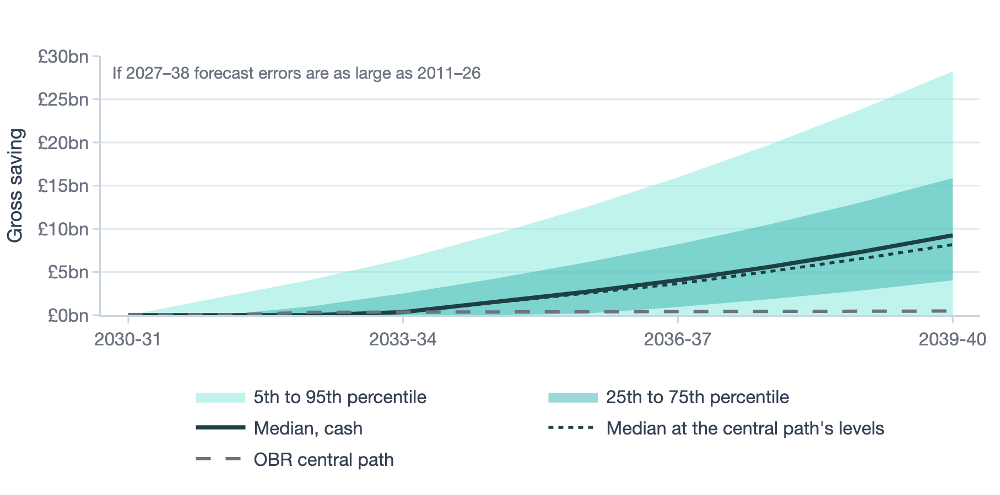
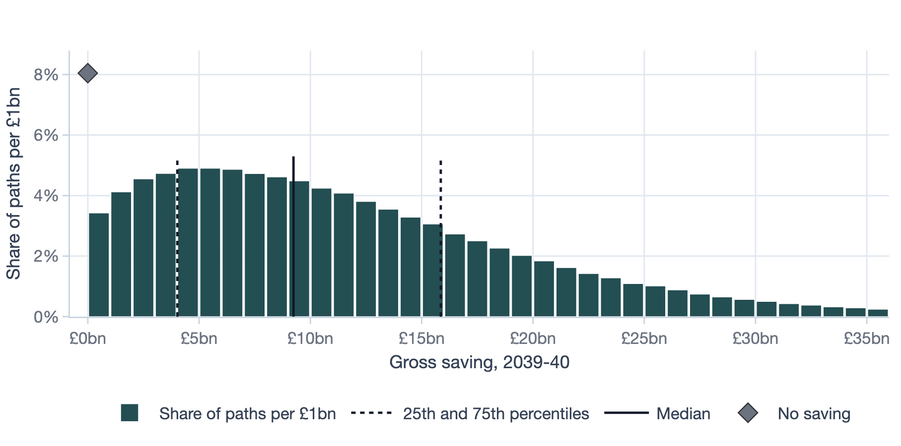
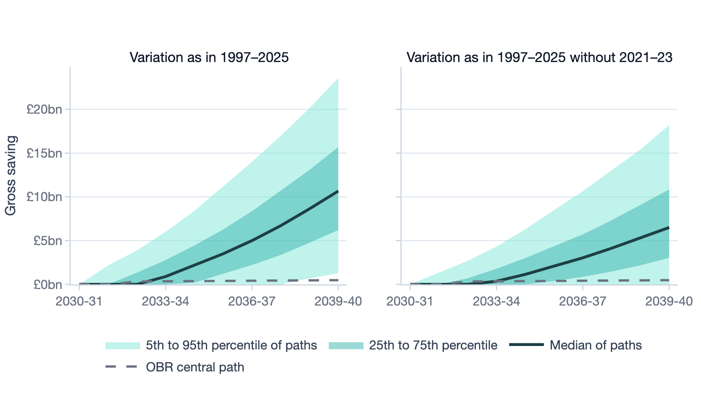
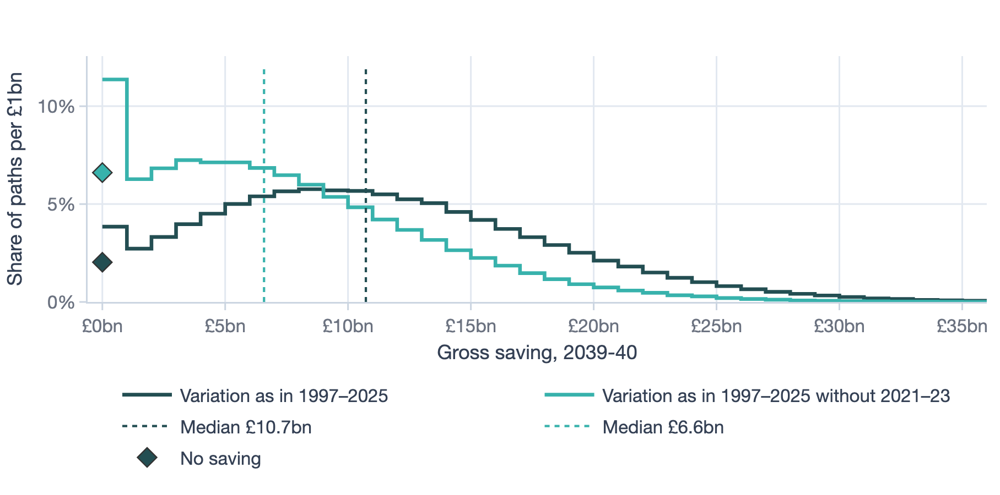

2026-11-12
Pension rules paying the highest of several indices ratchet above earnings; we ask what an earnings-anchored rule removes. From April 2030 the UK’s adjusted Triple Lock raises the State Pension by the highest of 2.5%, CPI and what keeps its April 2029 value relative to earnings. Its excess over its earnings path follows a Lindley recursion, so the gap from the triple lock grows only in earnings-led years after price- or floor-led ones. Replayed from April 2012, it removes 42% of the triple lock’s excess. A Bayesian model of the uprating inputs, fitted to the Office for Budget Responsibility’s (OBR) forecast errors and earlier outturns, puts the median gross saving in 2039-40 at about £9bn, with a little under half of paths above £10bn, if forecast errors over 2027–38 are as large as over 2011–26; without 2021–23 the median is £6.8bn, and with errors the size of past outturn variation £8.0bn. About £2.8bn of the median comes from how the statutory inputs differ from calendar-year outturns. We designed the model after two models failed tests registered before their scores, with the whole record seen, so no hold-out is clean. On the OBR’s central path the saving is £0.5bn. The Department for Work and Pensions estimates £15bn for Great Britain.
Keywords: pension indexation; triple lock; path dependence; microsimulation; forecast evaluation; proper scoring rules; registered analysis plans; Bayesian forecasting. JEL codes: H55, H68, C11, C53.
Indexation rules set how pensions in payment keep pace with prices and earnings, and with them much of a pension system’s long-run cost (Vidal-Meliá et al. 2009; OECD 2023). A rule that pays the highest of several indices each year is asymmetric: it passes on every year in which one index leads and keeps that gain in all later years. We ask which part of such a rule’s excess over earnings an earnings-anchored rule removes, on which paths of the indices, and how large the saving is under a forecast of the indices that states its uncertainty.
Since April 2011 the triple lock has raised the State Pension each April by the highest of prices, earnings growth and 2.5% (prices measured by the Retail Prices Index (RPI) in its first year and by the Consumer Prices Index (CPI) since), except in April 2022, when the law suspended the earnings leg (Section 2). Because it takes the highest of three figures every year, a year in which prices or the floor run ahead of earnings raises the pension for good, and later rises build on the higher level. The Office for Budget Responsibility’s (OBR) long-term projections assume that the triple lock raises the pension 0.6 percentage points a year faster than earnings (Office for Budget Responsibility 2026c), and it estimates that by 2029-30 the triple lock will have added £15.5 billion a year to spending relative to earnings uprating since its introduction (Office for Budget Responsibility 2025). We call the indexation floors of such rules guarantees; the Pension Credit guarantee, the means-tested minimum income for pensioners, is always named in full.
The government announced the adjusted Triple Lock on 29 September 2026, and the Budget of 28 October 2026 confirmed it, to take effect from the next Parliament: the triple lock applies to each rise through April 2029, and from April 2030 the pension also falls back towards its April 2029 value relative to earnings after years in which prices or the floor beat earnings (Section 3.1). The Budget puts the saving at: “Adjusting the Triple Lock is estimated to reduce State Pension spending by £15 billion a year by the late 2030s, and by £50 billion a year by the late 2040s” (HM Treasury 2026, para. 1.29), citing the analysis of the Department for Work and Pensions (DWP) (Department for Work and Pensions 2026b), and it recognises that the saving depends on the path of the indices: “Under the Triple Lock, the cost of the State Pension depends on which of prices, earnings or 2.5% is highest in each year, and on how those differences compound over time. That makes it inherently hard to forecast” (HM Treasury 2026, Box 5.A). We quantify that dependence. The Budget links the saving to funding a new settlement for older people, including personal care in England (HM Treasury 2026, ch. 1), and the OBR notes that “the Government stated its intention to expand state provision of social care”, so that the long-term effect of the two announcements together depends on that reform’s cost (Office for Budget Responsibility 2026a, para. 3.54); we cost the pension change alone.
The adjusted Triple Lock keeps the triple lock’s protection against prices and the floor but removes the ratchet: the part of the triple lock’s excess over earnings that it keeps after earnings lead again. The adjusted rule still pays above its earnings path while an excess lasts, so its saving is less than the triple lock’s whole premium over earnings uprating. We estimate its effect against the triple lock from 2027-28 to 2039-40 with microsimulation runs of PolicyEngine UK (Ahmadi et al. 2026) on the whole survey population, on the OBR’s central path, with the OBR’s long-term triple-lock premium applied to the triple lock only, and on simulated paths of prices and earnings, and we forecast its distribution with a Bayesian model of the uprating inputs whose paths those runs convert to cash.
The main result is a characterisation of which part of the triple lock’s excess over earnings an earnings-anchored rule removes: the gap grows each year by the smaller of earnings’ lead and the excess the adjusted rule still carries, so it depends on the order of the indices’ leads and not only on their average (Section 3.3). Replayed on past inputs from April 2012, the rule removes 42% of the excess; this is the evidence that needs no model of the indices’ future. On the OBR’s central and long-term paths it removes all of it, by construction of a smooth path on which earnings lead in every April after the price- or floor-led ones. On the two simulated scenarios, whose model overstates how often the lead changes, the adjusted rule’s average gap is 51% and 78% of the triple lock’s average excess, and most of it comes from year-to-year variation rather than from the paths’ mean. The Bayesian forecast’s median saving exceeds the OBR central path’s own for the same reason: every forecast path is centred on that path, and the saving comes from variation around it (Section 5.1).
The paper makes three contributions. First, we characterise the gap between a max-of-indices rule and its earnings-anchored variant. The anchored rule’s excess over its earnings path is a cumulative sum reflected at zero, a Lindley recursion (Lindley 1952), so the gap depends on the running minimum of the cumulative difference between the indices, as a lookback option’s payoff does (Goldman et al. 1979). The identity is standard; its use here is the gap’s yearly increment, , with two corollaries: costings that enter the triple lock’s excess as a smooth premium attribute all of it to the ratchet, and a lead for prices or the floor in the last year saves nothing. We add the exact condition for a positive saving, an upper bound by the smaller of the indices’ cumulative leads and, for independent yearly differences, the expected gap from Spitzer’s identity (Spitzer 1956), which rises with the differences’ variance when they are normal (Section 3.3).
Second, we test stochastic models of uprating inputs against official forecast vintages with proper scoring rules (Gneiting and Raftery 2007; Scheuerer and Hamill 2015), under a pass rule whose thresholds we registered before the first scores and whose treatment of April 2022 and of a failed baseline model we registered after them, before the second scores (Casey et al. 2012; Olken 2015) (Section 4.4). The baseline model overstates how often earnings growth falls below the floor, the event that opens the triple lock’s excess, and a second model, built on the OBR’s past forecast errors and registered before its scores, also fails. Third, we forecast the saving. A Bayesian vector autoregression in the deviations of the two inputs from a forecast path (Litterman 1986), with Student-t shocks, fitted to the OBR’s forecast errors since 2011 and to the statutory outturns before them, gives a posterior predictive distribution of the saving in every year (Section 4.5). If forecast errors over 2027–38 are as large as over 2011–26, the median gross saving in 2039-40 is about £9bn and a little under half of paths save more than £10bn (Section 5.1). Without 2021–23 in the record the median is £6.8bn, and with errors the size of past outturn variation £8.0bn (Section 5.1). We designed this model after both registered models failed and after a sensitivity conditional on stated volatility had been seen; it is the seventh model set against the same short record, and its headline rests on our decision to report a forecast (Section 4.5), not on a test. The scenarios and that sensitivity remain as checks of robustness (Section 5.3, Section 5.4).
Section 2 describes the triple lock’s record and relates the paper to the literature. Section 3 states the two rules, derives where the saving comes from and replays the rule on past inputs. Section 4 describes the data, the microsimulation, the paths of prices and earnings and the registered test. Section 5 gives the forecast of the saving and how far it can be relied on, then the scenarios and the distribution under stated volatility as checks, the mechanism along single paths and the distributional effects. Section 6 compares the results with official costings, Section 7 discusses what they imply for costing such rules, and Section 8 concludes and states the main limitations.
Figure 1 shows the rises actually paid in each April from 2011 to 2026. RPI set April 2011’s rise, 4.6%, under that year’s up-rating order (Social Security Benefits Up-rating Order 2011); the replay of the CPI rule gives 3.1%. From 2012, CPI set the rise five times, earnings six times and the floor four times. In April 2022 the law suspended the earnings leg, whose input was 8.4% on today’s figures, so that year’s rise was CPI, 3.1% (Social Security (Up-rating of Benefits) Act 2021). Over the sixteen rises the pension rose by 89.4% as paid.
Automatic adjustment mechanisms link a pay-as-you-go pension system’s benefits or contributions to indicators, so that its finances respond to demographic and economic change without new legislation (Vidal-Meliá et al. 2009); Knell (2010) shows how the choice of adjustment factor changes the return such a system pays, and Valdés-Prieto (2000) shows which indexation rules keep a notional-account system solvent. The indexation of pensions in payment is one such link, and the OECD’s review of the inflation surge since 2021 records how far different rules protected pensioners’ purchasing power (OECD 2023). The triple lock takes the highest of three figures each year, and Portes (2023) places it in the longer history of the State Pension’s value relative to earnings. A rule that pays the higher of two growth rates and compounds the result has the structure of a path-dependent option. The triple lock’s excess over earnings, the sum of each year’s lead of prices or the floor over earnings, compounds a yearly local floor, as a cliquet or ratchet guarantee does (Hardy 2003; Tiong 2000), while the adjusted rule’s gap depends on a running minimum of the cumulative difference between the indices, as a lookback option’s payoff depends on the running minimum of a price (Goldman et al. 1979; Conze and Viswanathan 1991). The adjusted rule’s excess over its earnings path is a draw-up of that cumulative difference, whose distribution the literature on the maximum drawdown of a Brownian motion describes in continuous time (Magdon-Ismail et al. 2004), and Spitzer’s identity gives its expectation when the yearly differences are independent (Spitzer 1956).
The option analogy connects the paper to the valuation of guarantees. Merton (1977) values a loan guarantee as a put option, Lucas (2012) argues that public guarantees and policies should be valued at market prices that charge for the risk they carry, and Geanakoplos and Zeldes (2010) apply that approach to accrued Social Security benefits. In pension finance, Jong (2008) values the liabilities of a fund that indexes benefits only when its funding allows, an option embedded in the indexation rule, and Hoevenaars and Ponds (2008) value the transfers between generations that such contingent rules create. We measure the cost in cash, undiscounted and with no charge for risk, because official costings of uprating rules use that measure and we compare our results with them; a market value of the triple lock’s guarantee would also need a price for UK earnings and inflation risk, which we leave aside. We use the option analogy for the structure of the payoff only.
The same guarantee also shares risk between generations. Diamond (1977) sets out the framework for analysing social security, and Ball and Mankiw (2007) and Gollier (2008) show how a pension system can share risk between generations that cannot trade with each other. Indexation decides who bears the risk in a pay-as-you-go system’s returns: Shiller (1999) argues for designing social security to share income risk across generations, Bohn (2009) shows how fiscal policy and benefit rules allocate aggregate risk between cohorts, and Auerbach and Lee (2011) compare how sustainable unfunded systems with different adjustment rules spread demographic and economic shocks. The triple lock insures pensioners against years in which prices or the floor beat earnings, permanently and at the expense of later taxpayers; the adjusted rule keeps that insurance only until earnings catch up, and so moves the risk of a fall in the pension relative to earnings back to pensioners for a time. We measure the fiscal side of that transfer, not its welfare value.
Long-run projections of pension spending are uncertain, and stochastic projections of social security finances express that uncertainty as distributions over paths of demographic and economic inputs (Lee and Tuljapurkar 1998). The OBR’s fiscal risks and sustainability reports treat the triple lock as a source of fiscal risk and project its cost against earnings uprating (Office for Budget Responsibility 2025); in the long-term scenarios of its 2026 Fiscal risks and sustainability report, as summarised in the October 2026 outlook, the triple lock accounted for around a third of the projected rise in State Pension spending as a share of GDP (Office for Budget Responsibility 2026a, para. 3.48). Central banks and fiscal analysts publish fan charts to show the uncertainty around a central projection (Britton et al. 1998; Celasun et al. 2006). Researchers can test a model that supplies such a distribution against outcomes: probability integral transforms check its calibration (Diebold et al. 1998), a forecast should be as sharp as its calibration allows (Gneiting et al. 2007; Mitchell and Wallis 2011), and proper scoring rules reward a forecaster for reporting its true predictive distribution (Gneiting and Raftery 2007), including for multivariate outcomes (Scheuerer and Hamill 2015). Density forecasts of inflation and output are better calibrated when they allow volatility to change over time (Clark 2011); our simulated scenarios do not, and our Bayesian forecast allows it only through fat-tailed shocks. Official fiscal forecasts have their own evaluation literature, which scores their errors and biases after the event (Leal et al. 2008) and finds official growth and budget forecasts optimistic on average, more so at longer horizons (Frankel 2011); we know of no earlier test of a stochastic model of uprating inputs against official forecast vintages before a costing uses its paths.
Static tax-benefit microsimulation applies the rules of the tax and benefit system to a representative survey of households, with behaviour held fixed, and is the standard tool for the distributional analysis of benefit reforms (Sutherland and Figari 2013); UKMOD is one such model for the four nations of the UK (Richiardi et al. 2021). Such models can add behavioural responses to the static calculation, as PolicyEngine UK does for labour supply and for capital gains realisations (PolicyEngine 2026c). Dynamic microsimulation models instead project individual life courses, including pension entitlements, forward in time (Li and O’Donoghue 2013); DWP’s costing of the adjusted Triple Lock uses one (Section 6). The net saving depends on how many newly entitled pensioners claim Pension Credit, and take-up of means-tested benefits responds to the size of the entitlement and the cost of claiming (Pudney et al. 2006); our runs hold each benefit unit’s claim decision fixed. Pre-analysis plans fix a study’s hypotheses and tests before the researcher sees the data, so that the researcher cannot choose results after the fact (Casey et al. 2012; Olken 2015), and Christensen and Miguel (2018) review their spread in economics. They are rare in model-based policy costing, where the analyst chooses both the model and its evaluation; Section 4.4 describes the plan we registered and how it changed after the first scores.
Under the triple lock the full basic and new State Pension rise each April by the highest of three figures: the CPI 12-month rate for the previous September (Office for National Statistics 2026c); growth in average weekly earnings, whole-economy total pay, in May to July of the previous year (Office for National Statistics 2026b); and 2.5%. ONS publishes both inputs to 0.1 point, and both rules here use them at that precision. We index each input by the April it sets: is the September CPI rate and the May–July earnings growth published before April , and is the 2.5% floor. Fiscal year pays the level set in April .
The adjusted Triple Lock follows the triple lock to April 2029. From April 2030 let be the pension’s level and an earnings path that starts at the 2029-30 level and grows with May–July earnings, . Then
The pension never rises by less than the higher of CPI and the floor, and never falls below its earnings path. In April 2030 this rise equals the triple lock’s, since the earnings path starts at the same level, so the two rules can first differ in April 2031 and the saving in 2030-31 is zero on every path. As a modelling assumption we round any top-up to the earnings path up to the next 0.1 points, so the pension never ends below that path; a top-up therefore leaves the pension at most 0.1% above its earnings path, and the margin does not accumulate, because the rule sets each top-up afresh against .
The Budget states the rule: from April 2030 the State Pension rises “by the highest of 2.5%, inflation, or the amount required to maintain its value relative to earnings as reached in April 2029” (HM Treasury 2026, para. 5.23 and Box 5.A), and adds that “It removes the ‘ratchet’ effect, whereby the State Pension rises ever higher relative to earnings” (HM Treasury 2026, ch. 1). Its wording fixes the anchor: the pension’s value relative to earnings “as reached in April 2029”. DWP says the same in other words: “This means that over time the State Pension is set to rise in line with average earnings” (Department for Work and Pensions 2026b). Two choices remain ours. The rule uses the triple lock’s measures, September CPI and May–July earnings, and we round the top-up up, as above.
DWP published its analysis on the day the government announced the change (Department for Work and Pensions 2026b). The OBR writes that its estimates of the change “depend critically on the order, level and covariation of wage growth and inflation over time” (Office for Budget Responsibility 2026a, para. 3.53). The rule would need primary legislation, because section 150A of the Social Security Administration Act 1992 requires the basic and new State Pension, and the Pension Credit standard minimum guarantee, to rise at least in line with earnings (Social Security Administration Act 1992), with a corresponding order in Northern Ireland under section 132A of the Social Security Administration (Northern Ireland) Act 1992 (Social Security Administration (Northern Ireland) Act 1992). In a year when the adjusted Triple Lock returns towards its earnings path, it rises by less than earnings growth. The suspension of the earnings leg for April 2022 also needed an Act (Social Security (Up-rating of Benefits) Act 2021). Table 9 counts such Aprils on each path run through the microsimulation.
When earnings lead, both rules give the same rise. The rules part only after a year in which the higher of CPI and 2.5% beats earnings. Both pay that higher figure, but it lifts the adjusted Triple Lock above its earnings path. When earnings lead again, the triple lock rises with earnings from the higher level, while the adjusted Triple Lock rises only by the higher of CPI and the floor until its earnings path catches up. Under the triple lock each such rise stays in the pension’s level; under the adjusted rule the level returns to its earnings path over the following years.
A two-year example shows the arithmetic. Suppose CPI is 6% and earnings growth 2% in the first year, then CPI 2% and earnings 4%. The triple lock rises by 6% and then 4%, 10.24% in all. The adjusted Triple Lock also rises by 6% in the first year, which leaves it 3.85 log points above its earnings path, and then by the floor, 2.5%, 8.65% in all. In the second year earnings lead by 1.45 log points, less than the excess, so the whole lead becomes the gap: the adjusted rule ends 1.4% below the triple lock (1.59 points less cumulative growth). The next subsection states this in general.
Write for the higher of CPI and the floor that applies in April , and for April 2029, the last rise under the triple lock alone. With the triple lock’s level and and as above,
with . Let , positive in a year in which CPI or the floor beats earnings, and measure each rule’s level against the earnings path, and . Then
The triple lock accumulates every positive , while the adjusted rule’s is a cumulative sum reflected at zero, a Lindley recursion (Lindley 1952). With and , the log gap between the rules, , is and
Proposition 1. The gap never falls, and it grows only in a year in which earnings lead while the adjusted rule is still above its earnings path, by the smaller of earnings’ lead and the remaining excess. The gap after April is positive if and only if some year in which prices or the floor lead () is followed by a later year in which earnings lead (). In particular the gap is zero on any path on which earnings lead in every year and on any path on which they never lead, and a lead for prices or the floor in the final year alone gives no saving. Appendix A gives the proof.
Because on every path, a path on which earnings lead in every year after the switch gives the smallest possible saving, zero. A path close to that, such as the OBR’s central path, gives a saving close to zero, and a distribution of paths with changes of lead gives a positive average. Proposition 1 does not say that variation around a given path raises the saving above that path’s own. The increment is concave in in a year in which earnings lead, so a spread of that year’s difference can lower the gap: on the path with = 2 log points the gap is 2 log points, and spreading the second year’s difference by either way, with equal weight, gives gaps of 0 and 2, an average of 1. Under independent differences, by contrast, the expected gap rises with their variance (Proposition 2); the counter-example needs a spread specific to one path. For any model of the inputs the bound above gives . The increment also says when the saving appears: larger earnings leads use up the excess faster, so higher earnings growth after a year of high inflation brings the saving forward.
Proposition 2. If the yearly differences are independent and identically distributed, then with the expected excess and gap after rises are If they are normal with mean and standard deviation , the expected gap is zero at and does not fall as rises, for every . Appendix A gives the proof, which rests on Spitzer’s identity (Spitzer 1956).
Proposition 2 gives a check that needs no simulation, though persistence in , such as runs of earnings-led years, and a mean that changes from year to year are outside it. At the mean and standard deviation of on the replay’s inputs from April 2012 to April 2026 (0.58 and 1.83 log points) it gives an expected gap of 5.42 log points over those fifteen Aprils and an expected excess of 15.86, against 6.41 and 15.15 on the replay itself (Section 3.4). At the pooled mean and standard deviation of on each earnings scenario’s paths from April 2030 it gives 4.12 and 3.88 log points by 2039-40, against path averages of 4.51 and 4.53 (Section 5.3), and expected excesses of 9.08 and 5.86 against 8.78 and 5.79.
The gross saving in a fiscal year is the difference in basic and new State Pension paid,
where is the survey weight of person , their basic or new State Pension under each rule and total spending on both under the triple lock; the approximation is exact, up to rounding, when each person’s amount is a fixed share of the full rate. The net saving is the change in the government’s direct budget balance, , where is the weight of household and the direct taxes it pays less the benefits it receives, State Pension included. The rounding of the top-up to the earnings path adds a small non-negative term to , so the identities, and the proposition’s “if and only if”, hold for the unrounded rule; in the model runs a rounded top-up can leave a small excess that a later earnings-led year turns into gap. On the paths run through the microsimulation the rounding changes in 2039-40 by at most 0.03 log points.
We can check the decomposition on inputs that have already occurred, with no model of their future path. The replay uses today’s revised ONS figures, so that both rules see the same inputs. It differs from the rise paid in April 2016, 2019, 2020 and 2025, by 0.1 to 0.3 points, because ONS has since revised the earnings figures, and in April 2011, which RPI set. In April 2022 (Section 2) the replay’s earnings path grows by that year’s CPI, 3.1%, the figure the rise followed, rather than by the published earnings figure. On the replay the triple lock rose 87.4%, against 66.2% for earnings alone and 60.2% for prices alone, which leaves it 12.7% above where an earnings link alone would have taken it.
Table 1 and Figure 2 replay the adjusted Triple Lock on today’s figures from each earlier April. Had it started in April 2012, 2013, 2014 or 2015, its level in 2026-27 would be 6.2% below the triple lock’s on the same inputs. Applied to the full new State Pension actually paid, £12,548 a year, that would be £11,769. Most of the difference follows April 2023, when September CPI of 10.1% set a rise 4.6 points above earnings growth of 5.5%; the gap opened in the earnings-led Aprils after it, as the increment formula says. From that start, the triple lock’s log excess over its earnings path is = 15.15 log points. That is more than the 12.7% above, which starts in April 2011 and counts April 2022 at published earnings, while this earnings path grows by CPI in that April. The adjusted rule removes = 6.41 log points of it, or 42%; the rest is the excess it still carries. Started in April 2024, 2025 or 2026, the rule would have paid the same as the triple lock every year, because earnings have led in every April since. In full model runs, State Pension spending in 2026-27 would have been £7.8bn lower, and the government £5.6bn better off once tax and benefits respond. Averaged over the Aprils from 2012 to 2026, the pension would have been 1.6% below the triple lock.
Table 1: The adjusted Triple Lock replayed on today’s figures from earlier starts: how far its level ends below the triple lock’s, the changes of lead between earnings and the higher of CPI and the floor in the Aprils from the start to the last, and the Aprils in which it rose by less than the triple lock (rule arithmetic).
| Start | Level below the triple lock, 2026-27 | Changes of lead | Aprils with a smaller rise |
|---|---|---|---|
| April 2012, 2013, 2014 or 2015 | 6.2% | 5 | 2016, 2019, 2020, 2024, 2025 and 2026 |
| April 2016, 2017 or 2018 | 5.1% | 4 | 2019, 2020, 2024, 2025 and 2026 |
| April 2019, 2020 or 2021 | 4.4% | 2 | 2024, 2025 and 2026 |
| April 2022 or 2023 | 4.2% | 1 | 2024, 2025 and 2026 |
| April 2024, 2025 or 2026 | 0.0% | 0 | None |
Note: Starts in the same row give the same levels; changes of lead are counted from the earliest.

We compute every saving and household figure for a given path by running PolicyEngine UK (Ahmadi et al. 2026; PolicyEngine 2026b, 2026c) on the whole survey population, once under each rule. Like the static models that Sutherland and Figari (2013) describe, PolicyEngine UK applies the tax and benefit rules of each year to survey households. It can also add behavioural responses, each of which compares a simulation with a baseline. PolicyEngine UK builds a baseline for every simulation; our code removes it, so no response runs and behaviour stays fixed in every run. The step on the OBR’s labour-supply elasticities changes the earnings of employees only, for the two eldest adults in each household, with its participation response disabled, and it leaves out people aged 60 and over, the self-employed and full-time students. A second labour-supply response, whose elasticities are zero unless a user sets them, has no age limit; like the response of capital gains realisations to tax rates, it is zero without a baseline. The State Pension is not withdrawn as earnings rise, so a lower pension would change the work incentives of younger household members mainly through an income effect. All runs use policyengine 6.11.1, which pins policyengine-uk 2.151.0 and policyengine-core 3.33.3, with the national Microcosm dataset for 2024-25 published with it (78,234 households, whose records are built on the Family Resources Survey) (PolicyEngine 2026a). We use the Enhanced Family Resources Survey, version 1.58.2, only for the check against DWP’s caseloads (Table 12). A path’s CPI and earnings growth replace the model’s economic assumptions before the data load, so benefit rates, tax thresholds and earnings follow it, and every run checks that they do. Only the basic and new State Pension differ between the two runs of a path. Under both rules the additional State Pension rises with September CPI and State Pension age follows the law’s timetable. We model pension-age Housing Benefit under current law. We give money in cash terms for the UK unless we say otherwise.
Three conventions shape the net saving. First, the Pension Credit guarantee rises with May–July earnings under both rules. That is the minimum section 150A requires, and neither the Budget nor DWP’s analysis says how the government will uprate the Pension Credit guarantee under the adjusted Triple Lock, so we take the statutory minimum as the main case. In each April since 2022 the Pension Credit guarantee has in practice risen by the same percentage as the State Pension, as in April 2023, when both rose by 10.1% against earnings growth of 5.5% (Social Security Benefits Up-rating Order 2023); in every earlier April from 2013 in which prices or the floor set the State Pension’s rise it rose by less, by the basic State Pension’s cash increase in April 2013, 2014, 2015, 2018 and 2021 and by about earnings growth in April 2017 (Social Security Benefits Up-rating Order 2013, 2014, 2015, 2017, 2018, 2021). If it rose by the same percentage as the State Pension under each rule, it would be lower under the adjusted rule, the Pension Credit offset would be smaller, possibly negative, and the net saving larger (Section 5.7 gives a lower bound on the effect). Second, the income tax personal allowance stays at £12,570 to 2030-31, as current law sets it, and then rises with each path’s September CPI; from April 2031, when the rules can first differ, the full new State Pension is above it, so a lower pension means less income tax even for a pensioner with no other income. The Budget’s Pension Tax Allowance (HM Treasury 2026, Table 6.1) lapses after April 2030, before the rules can first differ, and we assume no successor. Third, Pension Credit take-up follows the dataset’s own claim decision for each benefit unit, so a household newly entitled under the adjusted rule claims only if that decision says it would; Housing Benefit and council tax reduction respond only for households already receiving them, and passporting from the guarantee credit follows actual receipt.
The dataset represents households in 2024-25, and each record stands for a person of its age in every year. Microcosm calibrates its household weights once, in 2025, and through that year every run uses the dataset’s own weights. For later years PolicyEngine UK would scale every household weight by the ONS’s growth in the total population. Our code replaces that step: in each year after 2025 it rakes the 2025 household weights, by a bounded calibration that minimises their relative entropy and keeps each weight between 0.2 and 5 times its 2025 value. The weighted number of people in each of 70 age and sex cells (five-year bands under 60, single years from 60 to 79, then 80 to 84, 85 to 89 and 90 and over) then grows from its 2025 level as in the ONS’s 2024-based population projection, with each fiscal year taking three quarters of the mid-year population of its first year and a quarter of the next (Office for National Statistics 2026e). The rake targets age and sex only and recalibrates no other total, such as incomes, benefit caseloads or the number of households. The dataset does not top-code ages, so we keep every recorded age. Each person’s State Pension type follows from the date of birth that their age implies in each year: those who reach State Pension age before 6 April 2016 are on the basic State Pension, later cohorts on the new one (Pensions Act 2014). A record of a given age therefore moves from the basic to the new State Pension as later cohorts reach that age. We do not simulate deaths, migration or contribution histories, and the dataset leaves out pensioners abroad. Records carried forward from today’s pensioners may understate the entitlements of people reaching State Pension age in the 2030s, most of whom will have spent their whole working lives under the new State Pension.
The OBR central path uses the OBR’s October 2026 Economic and fiscal outlook (EFO), published with the Budget, for calendar years to 2030 (Office for Budget Responsibility 2026a), and the OBR’s March 2026 long-term economic determinants after that (Office for Budget Responsibility 2026c), which the OBR describes as a projection, not a forecast; the OBR published no long-term determinants with its October forecast. We call the combination the OBR central path. April 2027’s State Pension rise uses the published May–July 2026 earnings growth, 3.9%, and September 2026 CPI, 3.5% (Office for National Statistics 2026b, 2026c). For the Aprils 2028 to 2031 the inputs are the OBR’s September-quarter CPI and April–June earnings growth; later Aprils use its calendar-year figures. The OBR forecasts average earnings on a national-accounts measure, which stands in here for May–July average weekly earnings. Both rules share these inputs.
The simulated paths come from a model of monthly changes in the CPI index (Office for National Statistics 2026d) and in average weekly earnings (Office for National Statistics 2026a), fitted to data from 2000 to the latest published month, with the furlough months of 2020–21 left out. Each month’s change depends on the previous month’s changes in both series, with fixed coefficients; the shocks are past pairs of residuals drawn at random, so prices and earnings keep their joint variation, but the model has no periods of higher or lower volatility and no uncertainty about its coefficients. From the simulated months come both the statutory inputs (September CPI, May–July earnings growth) and the calendar-year growth the rest of the model uses. Every path is then shifted by the same smooth drift so that the average calendar-year growth matches the OBR’s forecast in every year, while each path keeps its own ups and downs. The earnings scenarios move that drift by 0.5 points a year from 2031. Because the drift is the smoothest monthly path that meets every calendar-year mean, it also moves the months just before 2031, so the scenarios’ statutory inputs for April 2030 and 2031 differ slightly (Table 2), and in April 2031 in the opposite direction: May–July 2030 earnings growth averages 2.59% with lower earnings growth and 2.48% with higher. Holding both scenarios’ earnings inputs for those two Aprils at the lower-earnings scenario’s values, path by path, changes the average in 2039-40 by at most 0.02 log points and the 2034-35 paired difference in the share saved (Section 5.3) from 0.63 to 0.62 points. We call figures like these, computed from the uprating inputs alone with no microsimulation run, rule arithmetic.
The shift matches calendar-year means only, so the statutory inputs that drive both rules sit off the central path’s (Table 2). Over the Aprils 2031 to 2039 the scenarios’ mean September CPI is 0.11 points below the central path’s, and their mean May–July earnings growth is 0.50 points below it with lower earnings growth and 0.38 points above it with higher, so the two scenarios are not centred on the central path. The simulated paths also have earnings growth below 2.5% in 43.0% and 26.1% of those Aprils, to compare with the shares the model expected and the test on past forecasts realised (Section 4.4). These and the other averages over the sampled paths below are rule arithmetic on the stored inputs of the paths run through the microsimulation, weighted as the fiscal figures are; none is a fiscal result.
Table 2: The statutory inputs setting each April’s rise: the OBR central path’s, and the average over the simulated paths of each earnings scenario (rule arithmetic on the stored inputs of the paths run through the microsimulation, weighted as the fiscal figures are), %. September CPI is the same in both scenarios, which move earnings only; the smooth drift also moves the inputs for April 2030 and 2031, before the scenarios’ shift starts.
| April | CPI: OBR central | CPI: simulated | Earnings: OBR central | Earnings: simulated, −0.5 | Earnings: simulated, +0.5 |
|---|---|---|---|---|---|
| 2030 | 2.14 | 2.15 | 2.26 | 1.84 | 1.88 |
| 2031 | 1.97 | 1.66 | 2.46 | 2.59 | 2.48 |
| 2032 | 2.00 | 1.98 | 2.68 | 2.08 | 3.13 |
| 2033 | 2.00 | 1.93 | 3.01 | 2.56 | 3.54 |
| 2034 | 2.00 | 2.12 | 3.34 | 2.79 | 3.79 |
| 2035 | 2.00 | 1.92 | 3.45 | 2.92 | 3.92 |
| 2036 | 2.00 | 1.85 | 3.49 | 2.83 | 3.83 |
| 2037 | 2.00 | 1.93 | 3.53 | 2.85 | 3.85 |
| 2038 | 2.00 | 1.76 | 3.58 | 2.86 | 3.85 |
| 2039 | 2.00 | 1.77 | 3.62 | 3.16 | 4.16 |
We count a change of lead as a change in the sign of a difference between consecutive Aprils, a tie keeping the previous lead, and give every rate per April transition, in two ways (Table 3): on , earnings against the higher of CPI and the floor, which drives the rule, and on earnings against CPI alone, which the test on past forecasts scored (Section 4.4). The forward rate is above the backtested one, the record since 2011 and the longer record, in which earnings led in most years, and it is higher on the scenario whose earnings growth sits closer to CPI. We have not tested how it depends on the window we fit the model to.
Table 3: Changes of lead per April transition.
| Inputs | Against the floor | Against CPI |
|---|---|---|
| Test on past forecasts, baseline model’s expectation | – | 0.35 |
| Test on past forecasts, realised | – | 0.33 |
| Simulated paths, baseline model | – | 0.43 |
| Simulated paths, earnings −0.5 | 0.50 | 0.46 |
| Simulated paths, earnings +0.5 | 0.42 | 0.39 |
| OBR central path | 0.11 | 0.17 |
| Record, April 2011 to 2026, April 2022 as in law | 0.33 | 0.33 |
| Record, April 2011 to 2026, April 2022 as published | 0.47 | 0.47 |
| Calendar record, 1989 to 2025 | – | 0.17 |
Note: Against the floor: earnings against the higher of CPI and the floor, the difference the rule uses; against CPI: earnings against CPI alone, as the test on past forecasts scored it. Test on past forecasts: four-year windows, three transitions each. Simulated paths: the Aprils 2027 to 2039 against CPI, and from the switch against the floor. Calendar record: calendar-year CPI and average earnings. A dash marks a figure not computed.
The fiscal averages for the earnings scenarios do not average every draw. The model makes 50,000 equally weighted draws of the baseline model; we sort them into ten groups of equal size by the gap between the rules in 2039-40 on those unshifted draws, plus a group in which the rules pay the same, and run 160 of them through the microsimulation, allocated across the groups in proportion to each group’s size and the spread of that gap within it, with at least two a group. Both earnings scenarios use these groups, this allocation and the same draws, shifted in opposite directions; each scenario’s average is a stratified estimate of the mean over all 50,000 draws, computed from its own microsimulation runs with the groups’ weights, and the 2034-35 averages use the same groups. Its margin is a 95% Monte Carlo interval from a standard error that combines the sampling of the microsimulation runs with the sampling of the draws. The margin is conditional on the model and leaves out uncertainty about its coefficients. Since the gross saving is close to and rule arithmetic gives for every draw, a regression estimator on would narrow the gross margins; we keep the registered estimator.
An average over the simulated paths needs a model whose paths behave like the real inputs, so we registered a test on past OBR forecasts (Office for Budget Responsibility 2026b) before scoring any model; the analysis plan is public in the paper’s repository (github.com/PolicyEngine/uk-triple-lock, file docs/METHOD.md), where the section that sets the rule used here is dated 6 October 2026. Five versions of the model of prices and earnings enter the test: the baseline model (monthly steps, one lag, resampled residuals) and variants with two lags, annual steps, Student-t shocks and normal shocks. We fit each only on data available before each forecast, centre it on that forecast, and score it with proper scoring rules for each statistic and for the joint outcome (Gneiting and Raftery 2007; Scheuerer and Hamill 2015) and with the coverage of central bands. The scores cover the gap between earnings and CPI in each year, how often the lead changes, how often earnings growth falls below 2.5% and the gap the two rules open after four rises. The test scores changes of lead between earnings and CPI, not the higher of CPI and the floor that the rule uses; the floor-years condition covers the difference. One test uses seven forecasts, one a year from the March 2016 EFO to the March 2022 EFO; another uses thirteen, from the June 2010 Budget forecast to the March 2022 EFO. Table 4 gives the pass rule; we fixed the thresholds together, as a broad screen, before we saw any score, and the record of the rule gives no other basis for any one of them. The accuracy condition compares versions with each other, so the baseline model meets it by construction, and its calibration rests on the coverage and bias conditions.
The rule changed once, after the first scores and before the second, in two elements. It scores April 2022 as the law applied it (Section 2): under the first rule every version failed when we scored April 2022 on the published earnings, which the furlough schemes had distorted, with one of six four-year outcomes inside each band (a seventh window closed only when ONS published September 2026 CPI). And it no longer lets another version replace a baseline model that fails: the first rule would have taken Monthly, two lags, which passes, so it would have authorised an average over its paths. Under the second rule only a passing baseline model supplies an average, and otherwise the analysis reports four scenarios: the OBR central path, the OBR long-term path, the historical replay and the paired paths with earnings growth 0.5 points lower and higher. Every other element, including all thresholds in Table 4, is as first registered (Appendix B gives the record).
With the data available at the October 2026 Budget, the baseline model failed one condition (Table 13, Table 14). It expected earnings growth below 2.5% in 44.6% of the years tested on the seven-forecast test, against 17.9% in practice, on an event that sets ; that error, 0.267, exceeds the limit of 0.25. The seven windows overlap and cover ten distinct years of inputs, 2017 to 2026; earnings growth was below the floor in two of them (2017 and 2020, setting April 2018 and 2021), against about 4.3 that the model’s forecasts imply when each year takes the average of the windows that cover it. The verdict follows the registered rule, which compares point estimates with the limit; the test cannot separate 0.267 from 0.25, and the case for reporting scenarios rather than an average rests on the direction of the error, which the reweighting diagnostic of Section 5.3 follows, more than on its margin over the limit. All five versions share the error, with floor biases from 0.243 to 0.275. The gap bias, 1.00 points for every version but one (0.98), is the error of the OBR forecasts the paths are centred on: the OBR expected earnings growth to exceed CPI by more than it did. Given that mean, the excess of floor years implies paths that are too dispersed. The forward paths are also centred on OBR forecasts, so any systematic OBR error in earnings less CPI carries over to the scenarios unchanged.
The baseline model passed every other condition. The outcome fell inside its central 80% band in five of seven four-year windows and 83% of annual checks, and its lead changes were close to those realised. On the published 2022 earnings, a sensitivity that does not enter the verdict, it expected 1.29 changes of lead per window against 1.86, and a gap bias of 0.29 points. The realised gap since 2011 sits at the 55th percentile of its paths. Two other versions passed and two failed on the same condition, but the rule forbids promoting another version, so the registered rule gives no expected value from these models.
After the baseline model failed, we registered a second model of the inputs before scoring it, together with what the paper would report if it failed: scenarios only, every score, and the model’s distribution of the share of spending saved once, in an appendix, as the output of a failed model. The analysis plan holds the registration in a dated section, committed and pushed three minutes before we pushed the model’s code and four minutes before its scores; the public record shows that order and no more. The registration states its own limits: its hold-out is not chronological, so the pools include later forecasts; we designed the model after seeing every earlier score and the whole record of forecast errors; and it is the sixth version of the model scored against these forecasts. The second model centres each path on the OBR’s forecast and takes its errors from the OBR’s own record: the errors of the thirteen forecasts, one a year, from the June 2010 Budget forecast to the March 2022 EFO, one to four years ahead, measured as September CPI and May–July earnings growth less the OBR’s calendar-year forecast for the same year. Each path takes one past forecast’s errors for its first four years, continues with the four-year-ahead errors of the target years that followed, and adds a draw of the uncertainty in the average error. To score a forecast, the model holds out every forecast that shares a target year with it. It faced the same test as the baseline model, with three added checks on its central bands, and met every scored condition but one (Table 17); the past-years check could not be scored, because no record of forecast errors exists before 2011, and does not count as met. On the thirteen-forecast test its variogram score, a proper score of how the yearly gaps move together (Scheuerer and Hamill 2015), is 1.295 times the baseline model’s, above the limit of 1.25. Across 40 other sets of random seeds, computed after the verdict, outside the registration, the ratio runs from 1.284 to 1.297, so the failure does not depend on the seeds; they vary only the second model’s draws. It does depend on single forecasts. In a check also computed after the verdict and not registered, leaving the score of the March 2012 EFO, March 2013 EFO or March 2014 EFO out of both models’ averages puts the ratio at 1.230 to 1.244, and over all thirteen single drops it runs from 1.230 to 1.361. As with the baseline model’s floor bias, the test cannot separate 1.295 from 1.25. In a split of that excess by forecast, also computed after the verdict and not registered, the forecasts from the March 2011 EFO to the March 2015 EFO carry 95% of its excess over the baseline model; their held-out pools hold mostly forecasts made from March 2017 on, whose errors include the years of furlough and of the 2022 inflation. On the seven-forecast test its floor bias, 0.249, sits below the limit of 0.25, but across the same seed sets it runs from 0.246 to 0.252 and exceeds the limit in nine of them, so the test cannot separate it from the limit. Under the registered rule the paper therefore reports scenarios, and Appendix C gives the second model’s distribution of the share saved; Section 4.5 says why the paper nonetheless gives a forecast.
The test has little power. With seven overlapping four-year windows, a model whose bands cover far less than 80% could still pass, and because the upper limit on coverage is 100%, the coverage condition cannot detect bands that are too wide. A third rule, the forward rule, applies only to estimates that use OBR forecasts published after this paper’s inputs, and adds a test on outcomes not yet observed. It gives its first verdict after eight years of outcomes, from 2027 to 2034, so the forward rule can first decide whether we may report averages over the paths as estimates in October 2034, when ONS publishes the last of those inputs, September CPI; Appendix B gives its power.
Table 4: The pass rule for the test on past forecasts, April 2022 scored as the law applied it.
| Condition | Threshold |
|---|---|
| Coverage | Between 50% and 100% of outcomes, yearly and after four years, fall inside the central 80% band |
| Coverage, plausible range | The range of plausible coverage after four years includes 80% |
| Bias in the yearly gap | Average error in earnings minus CPI at most 1.5 points |
| Bias in lead changes | Average error in the number of lead changes at most 1.0 a forecast |
| Bias in floor years | Average error in the share of years with earnings growth below 2.5% at most 0.25 |
| Accuracy scores | No score more than 25% worse than the baseline model’s |
| Past years | The realised gap since 2011 between the 5th and 95th percentiles of its paths |
Note: A version passes only if it meets every condition on both tests.
The second model’s registration said that if it failed the paper would report scenarios only, and that another model would need another registration that counts the failures. After it failed, the second author decided that the paper should give a forecast that states its uncertainty, on a Bayesian approach. The specification below is that registration, written before the model’s first fit, but it sets no pass rule: the forecast departs from the registered fallback by our decision, not by a test, and both failed verdicts stand. The analysis plan’s commit that holds it, with the priors, the checks and how the paper reports them, came six minutes before the model’s first code and eight minutes before that fit; the public record shows that order and no more. We set the priors after seeing the whole record of forecast errors, every score of the two failed models and the sensitivity of Section 5.4, so no hold-out below is clean, and the checks are reported whatever they show, not applied as a pass rule.
The model describes how September CPI and May–July earnings growth deviate from a forecast path. With the pair of deviations in year , from at the forecast’s origin, where is a full two-by-two matrix (each input’s persistence, and the pass-through from last year’s prices to pay and from last year’s pay to prices) whose largest eigenvalue in modulus is below 0.98, so deviations die out. The shock is bivariate Student-t with degrees of freedom and scale matrix : a normal shock whose variance a single draw each year scales up or down for both inputs together, so that most years are ordinary and a few, like 2021–23, are several times as volatile for prices and pay at once. It is a Bayesian vector autoregression of order one (Litterman 1986) with mean zero at every horizon, so a path has no drift from its centre. Forward, the centre is the OBR central path’s statutory inputs (Section 4.3), and from determination year 2031, where that path passes from the OBR’s forecast to its long-term determinants, each path adds a constant shift to both inputs that no data here estimate.
Two records inform the parameters, and each year enters once. The first is the OBR’s forecast errors, the statutory input less the OBR’s calendar-year forecast for the same year: for the June 2010 Budget forecast and each March forecast to March 2024, the cells one to four years ahead that the record holds, 55 cells with target years 2011–26; 2026 has one cell, the March 2022 forecast four years ahead. An origin’s errors are the process started from zero, so each cell’s residual is a draw of with scale . Forecasts made in neighbouring years share target years, so each cell is weighted by one over the number of cells with its target year, and each of the sixteen target years counts once. The second record is the statutory outturns of 1989 to 2010 around an estimated mean, 21 yearly transitions with scale ; earnings before 2001 use national-accounts wages and salaries per employee, as in Section 5.4. The two records share and ; ’s standard deviations are those of times factors , and its correlation differs from ’s by a shift on the Fisher scale, because variation of outturns around their own mean is not forecast error. The forward paths use . Table 5 gives the priors.
Table 5: The priors of the Bayesian forecast, in percentage points where they have units.
| Parameter | Prior | Reason |
|---|---|---|
| Persistence of each input | Normal, mean 0.50, sd 0.25 | Between no memory and a random walk |
| Earnings on last year’s CPI | Normal, mean 0.20, sd 0.20 | Pay catching up with past inflation, in part |
| CPI on last year’s earnings | Normal, mean 0.10, sd 0.20 | Labour costs feeding prices, weaker |
| Forecast shock scales, CPI and earnings | Log-normal, median 1.50, log-sd 0.50 | Wide around the size of official one-year errors already seen |
| Forecast shock correlation (Fisher scale) | Normal, mean 0.40, sd 0.50 | Common shocks move prices and pay |
| Outturn less forecast correlation, Fisher scale | Normal, mean 0.00, sd 0.50 | The two records may differ |
| Outturn to forecast shock scale ratios | Log-normal, median 1.00, log-sd 0.50 | The two records may differ |
| Degrees of freedom of the shocks, less two | Gamma, shape 2, rate 0.1 | Finite variance, with material mass on fat tails |
| Outturn mean, CPI | Normal, mean 2.00, sd 0.50 | The inflation target |
| Outturn mean, earnings | Normal, mean 4.00, sd 1.00 | Target inflation plus real pay growth |
| Long-run shift, CPI, from 2031 | Normal, mean 0.00, sd 0.25 | A small persistent miss of the target |
| Long-run shift, real earnings, from 2031 | Normal, mean 0.00, sd 0.50 | Revisions to productivity growth |
Note: Each is a judgment written into the analysis plan before the first fit; we set each after seeing the whole record.
We sample the posterior with the No-U-Turn sampler (Hoffman and Gelman 2014) in NumPyro, four chains of 1,500 warm-up and 2,500 kept iterations. The analysis plan’s one hard gate is numerical: rank-normalised split at most 1.01, bulk and tail effective sample sizes of at least 1,000 and at most ten divergent transitions (Vehtari et al. 2021). The analysis plan says that if the gate is unmet after one rerun the model reports no headline. As first coded, the bound on was a wall of zero density inside the sampler, which tripped the divergence diagnostic: the first fit had 74 divergent transitions and the registered rerun, at a higher target acceptance, 90. By the letter of the plan the model therefore reports no headline. We report one because we judge the divergences to come from how we coded the bound, not from the posterior, and the plan lets a coding error be fixed in a commit that says so. Sampling without the wall and then discarding the fourteen draws outside the bound, which is rejection sampling, targets the same truncated posterior; it gives no divergent transitions, at most 1.0009 and effective sample sizes of at least 6,456. The commit that makes that change precedes the first forecast figure in the public record, which shows that order and no more, and the wall-coded draws give the same median saving in 2039-40, £9.23bn against £9.24bn. A reader who holds to the letter of the gate should read the forecast as failing it.
For each of the 9,986 retained draws we draw twenty paths of the inputs for the determination years 2027–38 and their mirror images, 399,440 paths, and apply both rules to each in rule arithmetic. The cash saving on a path is its share of spending saved times the central run’s basic and new State Pension spending, scaled by the path’s triple-lock level against the central path’s: the identity of Section 5.4, which reproduces every microsimulation run we made. The net saving applies the runs’ ratio of net to gross saving (Section 5.1).
Posterior predictive checks compare the record with records the fitted model generates (Gelman et al. 1996). In 4,000 replications of the error record, origins sharing target-year shocks as the real ones do, no registered statistic lies outside the central 98% of replications. Closest to the edge are the changes of lead between earnings and CPI per four-year window, 1.62 realised against a replicated median of 1.00 (7.6% of replications at or above), and the standard deviation of one-year-ahead CPI errors, 2.65 points against 1.87 (12.8%). A check we added after seeing these, on the spread of the earnings error less the CPI error, finds the realised spread inside the replications at every horizon, with 36% to 53% of them at or above it. The priors alone, with no data, give a median saving in 2039-40 of £6.9bn.
We also refit the model thirteen times, once for each forecast of the test in Section 4.4 without the data that forecast’s hold-out forbids, and score its four-year paths exactly as the two registered models were scored. Under a chronological hold-out, which uses only errors observed before each forecast, the floor bias on the seven-forecast test runs from 0.2485 to 0.2506 across five sets of path seeds, and one of them misses the limit of 0.25; under the second model’s hold-out, which drops every forecast sharing a target year, it runs from 0.2585 to 0.2602 and every set misses. Every other limit is met under both, with gap biases of 1.0 to 1.2 points against 1.5, the OBR’s own overprediction of earnings less CPI. Both hold-outs sit at the floor-bias limit, so the scores cannot show that the model would have passed the test the first two failed.
Table 6 and Figure 3 give the forecast of the saving, and Figure 4 its distribution in 2039-40. Its probabilities are posterior predictive: shares of paths drawn from the fitted model and its priors. If the forecast errors of 2027–38 are as large as those of 2011–26, the median gross saving in 2039-40 is about £9bn (£9.2bn), half of the paths lie between £4.0bn and £15.9bn and nine in ten between zero and £28.2bn. A little under half of the paths, 46.6%, save more than £10bn, and 70.2% more than £5bn. That figure rests on the record’s errors: without 2021–23, the median is £6.8bn and 34% of paths save more than £10bn, and with shocks the size of past outturns’ variation around their own mean, in place of forecast errors, the median is £8.0bn. In 2034-35 the median is £1.5bn, with nine in ten paths between zero and £9.4bn.
On 8.0% of paths the two rules pay the same in every April to 2039. On the OBR central path itself the rule arithmetic saves £0.5bn in 2039-40. Every path is centred on that path’s inputs, so the forecast’s saving comes from the variation around them: a price- or floor-led April followed by earnings-led ones opens a gap that never closes (Section 3.3), so the spread widens with the horizon and the distribution is skewed to the right.
Once income tax and benefits respond, the median net saving in 2039-40 is £6.3bn, with nine in ten paths between zero and £19.3bn. The net figures apply the ratio of net to gross saving in our microsimulation runs, which misses a run’s net saving by 1.1% on average and 2.8% at most when that run is left out; their largest gross saving is £19.8bn; 15.4% of paths save more than that in 2039-40, so the net 95th percentile extrapolates the ratio.
The thresholds are in cash. A path on which the triple lock rises faster also has a larger pension to save on: across paths, the median triple-lock level in 2039-40 is 11.6% above the central path’s. At the central path’s levels, which removes that factor, the median saving is £8.2bn (5th to 95th percentile zero to £23.5bn) and 40.8% of paths save more than £10bn. As a share of basic and new State Pension spending under the triple lock the median saving is 3.33%, and nine in ten paths save between zero and 9.57%.
Table 6: The forecast of the reduction in State Pension spending under the adjusted Triple Lock relative to the triple lock, UK: the median and the 25th to 75th and 5th to 95th percentiles of the posterior predictive paths, and the share of paths with any saving and with a gross saving above £5bn and £10bn.
| Year | Measure | Median | 25th to 75th | 5th to 95th | Any saving (%) | Above £5bn (%) | Above £10bn (%) |
|---|---|---|---|---|---|---|---|
| 2034-35 | Gross (£bn) | 1.5 | 0.0 to 4.2 | 0.0 to 9.4 | 66.4 | 20.0 | 4.1 |
| 2034-35 | Net (£bn) | 1.0 | 0.0 to 2.9 | 0.0 to 6.4 | – | 9.8 | 0.8 |
| 2034-35 | Gross at central levels (£bn) | 1.4 | 0.0 to 3.9 | 0.0 to 8.3 | – | 17.4 | 2.6 |
| 2034-35 | Share of spending (%) | 0.76 | 0.00 to 2.05 | 0.00 to 4.43 | – | – | – |
| 2039-40 | Gross (£bn) | 9.2 | 4.0 to 15.9 | 0.0 to 28.2 | 92.0 | 70.2 | 46.6 |
| 2039-40 | Net (£bn) | 6.3 | 2.7 to 10.8 | 0.0 to 19.3 | – | 58.9 | 28.8 |
| 2039-40 | Gross at central levels (£bn) | 8.2 | 3.5 to 13.8 | 0.0 to 23.5 | – | 67.1 | 40.8 |
| 2039-40 | Share of spending (%) | 3.33 | 1.44 to 5.63 | 0.00 to 9.57 | – | – | – |
Note: Gross and net in £ billion, cash; gross at the central path’s levels without the path’s triple-lock level against the central path’s; share of basic and new State Pension spending under the triple lock, %. Net figures apply the runs’ ratio of net to gross saving and extrapolate it above the largest run. Conditional on the model, its priors and forecast errors as large as the record’s; the mean and the largest path are not reported, because the forecast’s lower tail of inputs is heavier than the record’s.


The forecast is conditional on the model, its priors and the record, and five features of them move it. First, the record. Its forecast errors from 2021–23 dominate it; Section 5.1 gives the median without them and at the outturns’ scale. Changing one prior at a time, for the persistence, the tails, the correlation and the scales of shocks in both records, and removing or doubling the long-run shift, puts the median between £8.6bn and £9.9bn; quadrupling that shift puts it at £7.2bn (below). Every run we made, listed in Table 19, puts it between £6.7bn and £10.6bn. Among the prior changes, fatter tails move the 95th percentile most, to £31.3bn.
Second, the measure. The OBR forecasts calendar-year growth, while the rules use September CPI and May–July earnings, so the record’s errors include how far the statutory inputs differ from calendar-year outturns. Fitting the model to calendar-basis errors lowers the median by £2.5bn, and by £2.8bn against a statutory fit on the same cells, so about that much of the median comes from that difference. Adding it back as a separately estimated term that does not persist from year to year gives £10.6bn, above the headline.
Third, the lower tail. The model’s shocks are symmetric, so September CPI falls below zero in 18.8% of forward path-years, against one year in 37 since 1989. Setting every negative input to zero leaves the median at £9.0bn and lowers the 95th percentile from £28.2bn to £24.9bn. The upper tail and the mean therefore rest on inputs less plausible than the record, so we report neither the mean nor the largest path saving.
Fourth, the long run. No forecast in the record runs past five years, so years five to twelve rest on the fitted persistence and on priors for a long-run shift that no data here estimate. The record does show persistent level misses: the statutory earnings input fell short of the spring forecasts made from June 2010 to March 2016 by 1.7 points on average three years ahead and 2.2 four years ahead, and exceeded those made from March 2017 to March 2022 by 2.6 four years ahead. A wider long-run shift lowers the median, to £8.6bn with its standard deviations doubled and £7.2bn with them quadrupled.
Fifth, the parameters and the design. Given one posterior draw’s parameters, the median saving varies across draws with a standard deviation of £2.2bn, and the share of paths above £10bn runs from 32% to 62% between the 5th and 95th percentiles of draws. The Monte Carlo error of the median is £0.02bn. We set the priors after seeing the whole record, and the prior on the shock scale is centred near the official one-year errors that the likelihood then fits, so those errors inform the forecast twice. We designed the model after two others failed their tests; it is the seventh set against the same short record, its checks (Section 4.5) are reported and not a pass rule, and its probabilities hold under the stated model and priors, which no test has confirmed.
Table 7 gives the reduction in State Pension spending under the adjusted Triple Lock, relative to the triple lock, on four scenarios, and Figure 5 the gross saving in each year. Two are single microsimulation runs. One is the OBR central path. The other, which we call the OBR long-term path, is our construction: it keeps the central path’s inputs but pays the triple lock at the OBR’s long-term triple-lock rate from April 2032, which phases in to earnings growth plus 0.6 points, and applies the adjusted rule to the same inputs, so the premium goes to the triple lock only. The other two take 160 simulated paths of prices and earnings, each run through the microsimulation under both rules, and move calendar-year earnings growth 0.5 points a year lower or higher from 2031 (Section 4.3). We attach no probability to any of them, and the four do not form a probability interval; they check the forecast of Section 5.1 against single paths and against the first model’s paths. Section 5.4 gives the distribution conditional on stated volatility, and Appendix C the second model’s distribution of the share saved, with no cash figure.
On the OBR long-term path the saving is £10.9bn in 2039-40, £7.3bn once income tax and benefits respond (Section 5.7). The adjusted rule’s level on this path is the same as on the central path, £18,840 a year for the full new State Pension in 2039-40, because the two runs share their inputs; only the triple lock differs. Earnings lead CPI and the floor in every April from 2032, so the adjusted Triple Lock returns to its earnings path and then follows it, and the whole of the triple lock’s excess counts as saving (). is the central path’s gap, 0.19 log points, plus the sum from April 2032 of the log differences between the OBR’s long-term triple-lock rate and May–July earnings growth, 4.15 log points, 4.34 in all by 2039-40, and gives 4.25% of £255.8bn in basic and new State Pension spending. Once the premium is fully in, the yearly difference runs from 0.5 to 0.7 points rather than exactly 0.6, because the OBR states its premium against national-accounts earnings and the rule pays it to 0.1 points against May–July earnings. The premium is the OBR’s average allowance for years in which CPI or the floor beat earnings, and no path of CPI and earnings pays it every year.
This scenario bounds the share of spending saved from above under the OBR’s convention, and only under it: the saving if the OBR’s premium is paid in full and the adjusted rule pays none. Since on every path (Section 3.3), the expected gap under that convention cannot exceed the premium’s cumulated value, 4.34 log points; because is concave, Jensen’s inequality gives the same for the share of spending, 4.25%. The argument reads the OBR’s premium, an arithmetic allowance of 0.6 points a year, as the expected log excess from the April 2029 anchor. In cash the bound need not hold, because the triple lock’s spending base rises with its excess, and the two co-vary across paths. The OBR’s own figures agree on the direction: its replay of 1990–2025 leaves the adjusted rule above earnings uprating on average (Office for Budget Responsibility 2026a, para. 3.51), and its provisional long-term estimate leaves debt above an earnings-uprating scenario because it expects periods in which inflation or the floor would still bind (Office for Budget Responsibility 2026a, para. 3.52). Our simulated paths put the triple lock’s excess above the premium (below), but they come from the model that failed the test, and the reweighting towards the realised frequency of floor years reduces as well as .
The two earnings scenarios give £11.4bn and £11.9bn in 2039-40. They are averages over paths from the model that failed the test, carry the same failed condition, and are reported because the registered rule keeps them as scenarios whatever the verdict, not because they are more reliable than the average it withdrew. They are not a range around an unshifted case. The scenarios exceed the OBR long-term path because on the simulated paths the triple lock’s cumulated excess over earnings is larger than the OBR’s premium gives: its average log excess over May–July earnings from April 2030, in 2039-40, is 8.78 and 5.79 log points, against 4.34 on the OBR long-term path. In April 2034 to 2039 the simulated triple lock pays 0.74 and 0.39 points a year above May–July earnings, against 0.58 on that path, so with higher earnings growth more of the excess arrives in the Aprils before the OBR’s premium is fully in. The adjusted rule’s average gap is 51% and 78% of the triple lock’s average excess (a ratio of averages); the average of the share path by path, over paths with an excess, is 61% and 84%.
As shares of basic and new State Pension spending the two scenarios both save 4.4% in 2039-40. Because they share draws, shocks and the selection of microsimulation runs, their difference is measured path by path: in rule arithmetic on the shared paths, the higher-earnings scenario’s share exceeds the lower’s by 0.02 ± 0.34 points in 2039-40, which cannot be told from zero, so most of the cash difference comes from the larger pension base that faster nominal earnings growth brings. Earlier the scenarios differ. In 2034-35 the saving is £4.4bn with higher earnings growth against £3.1bn with lower, 2.2% against 1.6% of spending, a paired difference of 0.63 ± 0.16 points: larger earnings leads use up the adjusted rule’s excess over its earnings path sooner, so the increment in Section 3.3 brings the saving forward.
The scenarios differ from the central path in both the mean and the variation of their inputs (Table 2), so the comparison with the central path does not by itself measure an effect of variation. Rule arithmetic separates the two. On a single path through each scenario’s mean statutory inputs, in 2039-40 is 1.07 log points with lower earnings growth and 0.58 with higher, against averages over the scenarios’ paths of 4.51 and 4.53 (Table 7). The year-to-year variation around those means thus accounts for 3.44 and 3.95 log points, most of each scenario’s gap.
The failed condition bears on these averages, and a diagnostic, not an estimate, shows which way. Reweighting each scenario’s sampled paths by exponential tilting on their number of Aprils from 2031 to 2039 with earnings growth below 2.5%, so that the share of such Aprils equals the 17.9% realised in the test, lowers the average in 2039-40 from 4.51 to 3.39 log points with lower earnings growth and from 4.53 to 3.89 with higher. It lowers the average excess from 8.78 to 4.42 and from 5.79 to 4.73. The effective sample sizes are 22 and 82 sampled paths against 111 before the tilt (the 160 runs carry unequal group weights). That tilt also raises the paths’ mean May–July earnings growth over those Aprils, from 2.74% to 3.64% and from 3.62% to 3.92%. For the lower-earnings scenario no reweighting of the sampled paths holds that mean fixed, and the tilt moves it above the central path’s 3.24%, so the diagnostic does not describe that scenario. For the higher-earnings scenario a tilt that holds mean earnings fixed lowers the gap from 4.53 to 4.07 log points (effective size 53). Of that gap, 3.49 log points lie above the single path through the mean inputs, against 3.95 before; the direction therefore rests on that scenario. As shares of spending the tilted gaps are 3.30% and 3.97% (Table 7), both below the OBR long-term path’s 4.25%: on the tilted paths the scenarios would fall below the OBR long-term path, and the gap left to DWP’s figure (Section 6) would widen. The diagnostic rests on few effective paths and is outside the registered rule.
Table 7: Reduction in State Pension spending under the adjusted Triple Lock relative to the triple lock, £ billion, UK, cash terms; in the final year also as a share of basic and new State Pension spending under the triple lock and as the log gap G between the rules, log points.
| Scenario | 2034-35: Gross | 2034-35: Net | 2039-40: Gross | 2039-40: Net | 2039-40: Share of spending (%) | 2039-40: G |
|---|---|---|---|---|---|---|
| OBR central path | 0.4 | 0.3 | 0.5 | 0.3 | 0.19 | 0.19 |
| OBR long-term path (triple lock at the OBR’s long-term rate from April 2032) | 3.1 | 2.1 | 10.9 | 7.3 | 4.25 | 4.34 |
| Earnings −0.5 points from 2031, average of 160 paths | 3.1 ± 0.4 | 2.2 ± 0.3 | 11.4 ± 0.5 | 7.8 ± 0.3 | 4.38 ± 0.19 | 4.51 ± 0.20 |
| Earnings +0.5 points from 2031, average of 160 paths | 4.4 ± 0.5 | 3.0 ± 0.3 | 11.9 ± 0.5 | 8.1 ± 0.3 | 4.40 ± 0.18 | 4.53 ± 0.19 |
| Earnings −0.5, reweighted (diagnostic) | – | – | 8.6 | – | 3.30 | 3.39 |
| Earnings +0.5, reweighted, mean earnings held (diagnostic) | – | – | 10.7 | – | 3.97 | 4.07 |
Note: The OBR central and long-term paths are single microsimulation runs, on which G = −ln(1 − share). The earnings scenarios are stratified estimates over the same 160 simulated paths, each run through the microsimulation, ± the 95% Monte Carlo error; their G is the average of G over the paths (rule arithmetic), slightly above −ln(1 − share) of the average share because the logarithm is convex. The last two rows reweight the scenarios’ paths to the realised share of floor years (Section 5.3): a diagnostic, outside the registered rule, with the saving at each scenario’s own spending base; the lower-earnings row also raises mean earnings. A scenario envelope, not a probability interval.

We added this section after both verdicts and before the Bayesian forecast, and is not part of either registration; it is now a check of robustness on that forecast. It gives the distribution of the saving conditional on stated assumptions about how the inputs vary: a sensitivity, which no test bears on. Every path is centred on the OBR central path’s statutory inputs in every year. September CPI and May–July earnings growth deviate from that path as they deviated from their own averages over a stated span of years: each deviation follows a first-order autoregression, and the two share jointly normal yearly shocks. The persistence, the shocks’ standard deviations and their correlation come from the statutory inputs over the span; May–July earnings growth starts in 2001, so for the years before we use national-accounts wages and salaries per employee, a different, calendar-year measure; starting both spans in 2001 instead moves the medians by less than £0.3bn. We show two spans together, 1997–2025 and the same years without 2021–23. The second span keeps 2020, when May–July earnings fell 0.9%; leaving it out as well would lower the median further, to £5.6bn. Over the first, the yearly shocks have standard deviations of 2.0 points for CPI and 2.1 for earnings growth, with a correlation of 0.31, and a deviation carries 0.36 and 0.26 of itself into the next year; without 2021–23 the figures are 1.3 and 1.5 points, 0.21, and 0.16 and 0.51. We wrote the method, both spans and the reporting into the analysis plan and pushed it 78 seconds before the first code and three minutes before the first figures; the public record shows that order and no more. It is not a registration: we chose the spans after seeing the standard deviations of calendar-year CPI and national-accounts earnings over spans starting in 1989, 1993, 1997 and 2011, with and without 2021–23, and both models’ results; neither registered model enters it. Each setting has 400,000 paths, half of them the mirror image of the other half about the OBR central path, and rule arithmetic gives each path’s gap between the rules.
The cash saving on each path is its share of spending saved times the central run’s basic and new State Pension spending under the triple lock, scaled by the path’s triple-lock level against the central path’s. That identity reproduces the gross saving of each of the five paths we ran through the microsimulation one at a time (for the OBR long-term path with its stored triple-lock rates, which the rules do not set), and the stratified averages of the earnings scenarios, to within £0.00001bn. The net saving applies the ratio of net to gross saving in those runs, 0.683; left out one run at a time, that ratio misses the run’s net saving by 1.1% on average and 2.8% at most. Net figures above £19.8bn of gross saving, the largest we ran, extrapolate the ratio: in 2039-40 that covers 11.8% of paths under the first span, including its 95th percentile, and 3.3% under the second.
If prices and earnings vary around the OBR central path as they did in 1997–2025, half of the paths save more than £10.7bn in 2039-40, and 90% save between £1.4bn and £23.8bn (Table 8, Figure 6). If they vary as in those years without 2021–23, the median is £6.6bn and 90% of paths save between zero and £18.2bn. The Bayesian forecast’s median, £9.2bn, lies between the two (Section 5.1). On 2.0% and 6.6% of paths the two rules pay the same in every April, the paths on which, from the switch, earnings never lead after a price- or floor-led April. The rule arithmetic on the OBR central path itself saves £0.5bn, below the 5th percentile in the first setting: every path has the central path’s mean inputs, so the difference comes from the variation around them, as Section 3.3 describes. The spread widens with the horizon because the gap never closes once opened (Figure 6), and the final year’s distribution is skewed to the right (Figure 7).
Table 7 reports averages over paths and Table 8 medians. The median share under 1997–2025 is below the earnings scenarios’ average because deviations here persist from year to year, so the lead changes less often; with no persistence it would be 4.62%, above both. It is below the second model’s (Table 15) because that model’s inputs vary more (Appendix C) than these, whose standard deviations are 2.0 to 2.2 points, and its centre drifts. Variation of outturns around their own average is not forecast error around a forecast. The OBR’s spring forecasts’ errors one to four years ahead are of similar size or larger, with standard deviations of 2.0 to 2.7 points for calendar-year CPI and earnings growth and 2.5 to 3.2 for the statutory inputs, but more closely correlated between prices and earnings, at 0.77 to 0.84 and 0.55 to 0.67. A higher correlation lowers the saving: at 0.8, with the same standard deviations and persistence, the medians are £9.0bn and £5.3bn. A first-order vector autoregression with cross-lags, or yearly shocks resampled from the span in place of normal ones, gives medians within £0.6bn of those in Table 8 under both spans.
Table 8: The saving under stated volatility: if September CPI and May–July earnings growth vary around the OBR central path as they did over each span, the median and the 5th to 95th percentile of paths of the reduction in State Pension spending under the adjusted Triple Lock relative to the triple lock, £ billion, UK, cash terms (gross from the identity with the stored microsimulation runs, net from their ratio of net to gross); the median share of basic and new State Pension spending saved; and the share of paths on which the two rules pay the same rate in every April to that year.
| Variation as in | Year | Gross: median (5th to 95th) | Net: median (5th to 95th) | Median share of spending (%) | Rules pay the same (% of paths) |
|---|---|---|---|---|---|
| 1997–2025 | 2034-35 | 2.2 (0.0 to 8.5) | 1.5 (0.0 to 5.8) | 1.06 | 23.5 |
| 1997–2025 | 2039-40 | 10.7 (1.4 to 23.8) | 7.3 (1.0 to 16.3) | 3.97 | 2.0 |
| 1997–2025 without 2021–23 | 2034-35 | 1.2 (0.0 to 6.3) | 0.8 (0.0 to 4.3) | 0.58 | 31.4 |
| 1997–2025 without 2021–23 | 2039-40 | 6.6 (0.0 to 18.2) | 4.5 (0.0 to 12.4) | 2.56 | 6.6 |
Note: The Monte Carlo standard error of the gross median in 2039-40 is £0.012bn and £0.010bn, and of the 5th and 95th percentiles at most £0.016bn and £0.027bn, from 40 batches of paths; the 5th percentile under 1997–2025 without 2021–23 is exactly zero in every batch. A sensitivity conditional on each span: no test bears on either, and neither registered model produced them.


The OBR central path is one smooth path. The floor sets the triple lock in April 2029, 2030 and 2031; from April 2032 earnings lead every year (Figure 8). The two rules differ in one year, April 2032: after the floor years the adjusted Triple Lock rises only by the floor, or by what brings it back to its earnings path, while the triple lock rises with earnings from the higher level. By 2039-40 the full new State Pension is £18,876 a year under the triple lock and £18,840 under the adjusted rule, and the saving is £0.5bn (£0.3bn net). The OBR finds the same for its forecast period: “in our current medium-term forecast an uprating of 2.5 per cent would apply under both the previous and adjusted version of the triple lock in both 2030-31 and 2031-32” (Office for Budget Responsibility 2026a, para. 3.50, footnote 17).

We run three simulated paths through the microsimulation: one drawn at random, and two picked near given percentiles of the gap between the rules in 2039-40 among the 50,000 draws, one at the 48th percentile and one at the 88th. The random path’s gap, £1,018 a year, lies between the 50th and 75th percentiles. Each is one path the model makes, not a forecast, and carries no probability weight. Figure 9 shows how far apart the two rules end on each, beside the two OBR scenarios. Table 9 gives, for each path, the saving, the changes of lead, the Aprils with earnings growth below the floor and the last April in which prices or the floor led. It also counts the Aprils in which the adjusted rule rises by less than earnings, which the change to section 150A would have to allow (Section 3.1), and gives the share of the triple lock’s excess over earnings, , that the adjusted rule removes. That share is all of the excess on the two OBR paths, on which earnings lead in every April after the last price- or floor-led one in April 2030. It is less on simulated paths whose last price- or floor-led years come late, so that earnings-led years have not yet worked off their excess by 2039-40: the random path’s last such April is 2036 and the path near the median gap’s 2037. Most of a path’s saving comes from a few years of high inflation or weak earnings followed by years in which earnings lead, after which the gap stays. The count of changes of lead does not order the savings, because the increment depends on the size of each lead as well as its timing: the path near the 90th percentile has fewer changes of lead than the path near the median, but a longer run of earnings-led years after its price-led ones. The random path’s pension is higher under both rules because it draws higher CPI and earnings growth than the OBR’s forecast, which also raises the spending base behind its saving.

Table 9: The paths run through the microsimulation, in the final year: the full new State Pension under each rule, the saving, the average loss among households with less income than under the triple lock, and, over the Aprils from the switch to the final year (rule arithmetic), the changes of lead between earnings and the higher of CPI and the floor, the Aprils with May–July earnings growth below the floor, the last April in which the higher of CPI and the floor beat earnings, the Aprils in which the adjusted rule rose by less than earnings, and the share of the triple lock’s log excess over earnings that the adjusted rule removes, G/y.
| Path | Triple lock (£ a year) | Adjusted (£ a year) | Gross (£bn) | Net (£bn) | Average loss (£ a year) | Changes of lead | Aprils below the floor | Last April prices or floor led | Aprils with a rise below earnings | Excess removed, G/y |
|---|---|---|---|---|---|---|---|---|---|---|
| OBR central path | £18,876 | £18,840 | 0.48 | 0.33 | £35 | 1 | 2 | 2030 | 1 | 100% |
| OBR long-term path | £19,676 | £18,840 | 10.87 | 7.34 | £801 | 1 | 2 | 2030 | 1 | 100% |
| Random model path | £21,045 | £20,028 | 13.23 | 9.06 | £973 | 5 | 2 | 2036 | 5 | 99% |
| Model path near the median gap | £18,782 | £17,912 | 11.30 | 7.69 | £836 | 5 | 6 | 2037 | 4 | 86% |
| Model path near the 90th percentile | £19,630 | £18,104 | 19.83 | 13.45 | £1,459 | 3 | 5 | 2035 | 5 | 92% |
Table 10 follows the gross saving on the OBR long-term path to the net saving. In 2039-40 extra Pension Credit offsets £0.81bn of the £10.87bn gross saving and lower income tax £2.39bn, leaving £7.34bn net, 68% of the gross. The net figure counts direct taxes and benefits only, with no change in behaviour. It leaves out VAT and other indirect taxes on pensioners’ lower spending, which would make it smaller. Not every offset falls on the same budget: local authorities pay council tax reduction in Great Britain (Northern Ireland has rate relief instead), part of the income tax would otherwise go to the Scottish and Welsh governments, and in Scotland the Scottish Government pays the Pension Age Winter Heating Payment in place of the Winter Fuel Payment. Table 10 bounds the Pension Credit convention of Section 4.1 in one direction only. If the Pension Credit guarantee followed each rule’s rise, the Pension Credit, Housing Benefit and council tax reduction offsets, £1.09bn together, would vanish and could change sign, because a lower Pension Credit guarantee also lowers awards to existing claimants and moves fewer people onto the guarantee credit. The net saving on this path would then be at least about £8.4bn, 78% of the gross, by an amount we do not estimate.
Table 10: From gross to net on the OBR long-term path in the final year, £ billion.
| 2039-40 (£bn) | |
|---|---|
| Gross saving (State Pension) | 10.87 |
| Extra Pension Credit | −0.81 |
| Extra Housing Benefit | −0.23 |
| Extra council tax reduction | −0.05 |
| Extra Winter Fuel Payment | −0.03 |
| Less income tax | −2.39 |
| Other taxes and benefits | −0.03 |
| Net saving | 7.34 |
Note: Each offset is signed so the column adds up to the net saving.
The household results run each path through PolicyEngine UK for the whole survey population, once under each rule. The model recalculates every pensioner’s State Pension and, with it, their income tax, Pension Credit, Housing Benefit, council tax reduction and Winter Fuel Payment. We report them on the OBR long-term path, the largest of the single runs, and give the poverty changes on the OBR central path and the two simulated paths picked by their gap beside it. Cash and percentage changes in income scale roughly with the gap in the pension; poverty rates do not.
On the OBR long-term path households with less income under the adjusted Triple Lock than under the triple lock in 2039-40 have £801 a year less on average, against £35 on the OBR central path. Single pensioners have 0.8% less income than under the triple lock on average, and pensioner couples 1.3%. The share of households with at least £1 a year less income, about 30% on every path, counts the households that receive a State Pension and says nothing about the size of the effect.
Figure 10 ranks households by equivalised household net income before housing costs under the triple lock, with each decile holding a tenth of people, and gives each decile’s total change in income as a share of its total income. Relative to income, the change is largest in the 3rd decile, at 0.56% of income, and smaller in the lowest-income and in the higher-income deciles. The guarantee credit, which makes up a lower pension pound for pound, and the State Pension’s smaller share of higher incomes both work in this direction. Four example pensioners in Appendix D show the range: on the model path near the median gap, the share of the lower pension that reaches their income in 2039-40 runs from 6% to 80% for those whose income falls, and one ends better off because of a threshold.
On the OBR central path, where the pension gap is small, no poverty measure changes by more than 0.03 percentage points. On the OBR long-term path pensioner poverty after housing costs is 0.70 points higher against the fixed line and 0.75 points higher against the relative one, and on the simulated path near the 90th percentile of the gap up to 1.52 points higher (Table 11). Pensioners here are people over State Pension age. The poverty changes on single paths carry no sampling margin, and we have not benchmarked the model’s levels: pensioner relative poverty after housing costs under the triple lock is 10.9% in 2027-28, the first year of the runs, against DWP’s modelled around 14% for 2024-25, also for people above State Pension age (Department for Work and Pensions 2026b); Households Below Average Income statistics instead count people in pensioner families. Poverty among everyone changes much less, and relative poverty among everyone falls: the relative line is 60% of median income in each run, and the lower pension lowers the median, so fewer people of working age fall below the line. The fixed line is 60% of the 2024-25 median, held fixed in real terms by uprating it with each path’s CPI, so it differs between paths; it also differs from the official absolute measure in Households Below Average Income statistics, which DWP anchors in 2010-11. Pension Credit makes up much of a lower pension for pensioners on the guarantee credit, but not for those just above it.

Table 11: Poverty after housing costs in the final year: share of people in households below the line, %, and the change under the adjusted Triple Lock, percentage points.
| Measure | Triple lock (%) | Adjusted (%) | Change, OBR central (points) | Change, OBR long term (points) | Change, median-gap path (points) | Change, 90th-percentile path (points) |
|---|---|---|---|---|---|---|
| Pensioners, fixed line | 6.73 | 7.43 | 0.01 | 0.70 | 0.88 | 1.52 |
| Pensioners, relative | 10.62 | 11.37 | 0.03 | 0.75 | 0.66 | 0.93 |
| Everyone, fixed line | 15.89 | 16.06 | 0.00 | 0.17 | 0.20 | 0.36 |
| Everyone, relative | 19.28 | 19.12 | −0.01 | −0.16 | −0.03 | −0.23 |
Note: Levels are for the OBR long-term path only. Fixed line: below 60% of the 2024-25 median, uprated by each path’s CPI, so the line differs between paths. Relative: below 60% of the median in the same run.
DWP costs the adjusted Triple Lock at £15bn in 2039-40 in cash terms (Department for Work and Pensions 2026b), and the Budget repeats the figure (Section 1). It is direct spending for Great Britain, rounded to the nearest billion, so it covers £14.5bn to £15.5bn, and it leaves out tax and debt interest. DWP’s method note says that “Pensim3 uses administrative and survey data, including the Family Resources Survey, to project the population and individual pension outcomes from 2018 to 2100. The analysis in this publication covers Great Britain” and that “Components of the pre-2016 State Pension that are not covered by the Triple Lock are assumed to continue to be uprated by CPI” (Department for Work and Pensions 2026b); its model is a dynamic microsimulation model of the kind Li and O’Donoghue (2013) review. The government has said, in answer to a parliamentary question, that DWP’s analysis did not use single-year earnings or prices growth assumptions (UK Parliament 2026). That makes it closer in kind to the OBR’s average-rate convention than to a simulated path, so we infer that the OBR long-term path is the closest of our scenarios in method. The Budget publishes the trajectory behind the figure only as a chart of State Pension spending as a share of GDP under each rule (HM Treasury 2026, Box 5.A), which we read from its vector file to about 0.01 points of GDP, a reading the Budget does not tabulate (the paper’s repository holds the readings, the method and the file’s provenance, under data/benchmarks). On our reading, the adjusted rule’s spending is 2.4% below the triple lock’s in 2034-35 and 5.5% below in 2039-40, against 1.63% and 4.25% on our OBR long-term path and at most 4.40% in 2039-40 on the scenarios, and its two lines first part in 2031-32, as the rules can first differ in April 2031 here. The government’s own path therefore saves a larger share of spending than any of our scenarios. Against the forecast of Section 5.1, the government’s 5.5% lies just below the 75th percentile of the share saved, and 28% of paths, which are for the UK, save more than DWP’s £15bn for Great Britain.
Our nearest figures are the gross savings in Great Britain: £0.5bn on the OBR central path, £10.6bn on the OBR long-term path, and £11.1bn and £11.6bn on the two earnings scenarios. The population also differs. DWP projects deaths, migration and State Pension entitlements, while we keep today’s survey records and rake their weights to the ONS’s projected growth by age and sex (Section 4.2). Our survey’s spending on the basic and new State Pension, the base the saving scales with, is 94% of DWP’s forecast for 2026-27 (Table 12), but that ratio compares our Great Britain base with a DWP base that includes State Pensions paid abroad, which DWP’s Great Britain costing leaves out. On total State Pension excluding payments abroad our survey matches 98% of DWP’s forecast, so the like-for-like ratio for the basic and new State Pension lies between 0.94 and about 0.98. Since the gross saving is close to , scaling our base to DWP’s raises the Great Britain figures in proportion, to £10.8bn to £11.3bn on the OBR long-term path. Allowing for DWP’s rounding, that leaves £3.2bn to £4.7bn of DWP’s figure, 22% to 31% of it (14% to 28% on the scenarios).
Most of that residual is in the share of spending saved, not in the base. By the bound of Section 3.3, a saving of 5.5% of spending needs a triple-lock excess of at least 5.70 log points by 2039-40, about 0.63 a year over the Aprils from 2031, the first in which the chart’s lines part, while the premium we apply phases in from April 2032. Paying the premium in full from April 2031, in rule arithmetic with caseloads held, raises the gap on the OBR long-term path to 5.51 log points, a share of 5.4%, and the Great Britain saving at DWP’s base to £13.8bn to £14.4bn, so the start date of the premium accounts for most of the residual. Other candidate sources, none of which we test, are DWP’s own uprating path, later cohorts’ larger new State Pension entitlements, which our base may understate (87% of recipients in 2039-40 in the raked survey are on the new State Pension, with entitlements carried forward from today’s pensioners), and State Pension age. Both of the chart’s lines fall as a share of GDP from 2036-37 to 2039-40, as they do from 2026-27 to 2028-29 while State Pension age rises to 67; our runs keep State Pension age on the law’s timetable, which reaches 68 only from 2044 (Pensions Act 2007). The Budget does not say why its lines fall, so this is a check, not a finding.
We cannot compare DWP’s £11bn in 2025-26 prices more closely, because DWP does not state its deflator. DWP adds that its savings “should not be used to then derive further point estimates for savings in an individual year”, and its saving keeps growing, to £50bn in 2049-50; our horizon ends in 2039-40.
The OBR’s own figures measure related but different things. Its footnote on the medium-term forecast matches our OBR central path, on which the adjusted rule rises by 2.5% in April 2030 and 2031 (Office for Budget Responsibility 2026a, para. 3.50, footnote 17). Its replay of 1990–2025, with the anchor set in 1990, puts payments under the adjusted rule 1.4% lower on average than under the triple lock and 4.4% higher than under earnings uprating (Office for Budget Responsibility 2026a, para. 3.51), so on that replay the adjusted rule removes about 25% of the triple lock’s average log excess over earnings; the same average gap on our replay, which starts in April 2012, is 1.6% (Section 3.4). Its provisional long-term estimate, debt about 25% of GDP lower than under the triple lock and about 10% higher than under earnings uprating in 2075-76 (Office for Budget Responsibility 2026a, para. 3.52), corresponds to about 71%. These are averages over years and shares of debt, not of the pension’s level in one year, so they do not compare directly with our 42% on the replay and 51% and 78% on the scenarios. Its estimate that the triple lock will have added £15.5 billion a year by 2029-30 compares the triple lock with earnings uprating since 2011 (Office for Budget Responsibility 2025). The like-for-like figure on our replay is the triple lock’s excess over its earnings path in 2026-27, 12.7%, about £14bn of basic and new State Pension spending, of which the adjusted rule started in April 2012 would remove £7.8bn.
DWP also projects pensioner relative poverty after housing costs under the adjusted Triple Lock falling from around 14% to around 8% by 2049-50, against a poverty line projected forward with earnings. Our poverty rates (Section 5.8) are for 2039-40, use a line set each year from the simulated incomes, and compare the adjusted Triple Lock with the triple lock rather than with today, so they answer a different question.
Two points bear on how analysts cost max-of-indices rules. First, the decomposition of Section 3.3 says which part of the triple lock’s excess over earnings an earnings-anchored rule removes. Path by path, it removes all of it when enough earnings-led years follow price- or floor-led ones, as on both OBR paths by construction, and none of an excess that arrives at the end of the horizon. On past inputs (Section 3.4) and on average over the two scenarios, whose model overstates how often the lead changes, it removes part of the excess; on the scenarios most of the average gap comes from year-to-year variation rather than from the paths’ mean (Section 5.3). The OBR’s long-term premium is a reduced-form allowance for the same effect, which is why the scenario built on it bounds the share saved only within that convention.
Second, the failed condition points towards overstatement (Section 4.4). A floor year adds to the gap only when earnings lead later, and larger earnings leads use up the excess faster, so fewer floor years with stronger earnings could open the gap faster, and the direction of the bias is not obvious beforehand. The reweighting diagnostic of Section 5.3 settles it for the scenario in which mean earnings can be held fixed. That diagnostic is not an estimate, and a model that passed the test could still differ from it. The second model does not corroborate that direction (Appendix C).
The forecast record limits any distribution of the saving, the Bayesian forecast’s included. Both registered models failed, and the record explains why a pass would not have been enough. Had the second model passed, the analysis plan left it to the second author to decide whether its distribution could replace the scenarios, and the test could not have seen the drift of its centre in years five to twelve (Appendix C). The OBR’s record holds thirteen yearly forecasts with four years of statutory outturns, and their windows overlap, covering sixteen years of inputs, 2011 to 2026. The saving in 2039-40 depends on inputs up to twelve years ahead, and no forecast in the record runs that far, so any model of the later years must assume how errors at four years carry on, and no complete forecast can test that assumption. Suppose the OBR’s long-term assumptions of the time extended the four scored years of each forecast made in 2010 to 2014 by eight more. Those twelve-year windows would overlap, and sixteen years of outturns hold at most one independent window of that length. The second model carries forward the four-year-ahead errors of past target years, and the errors for 2021 to 2023, when May–July earnings growth rebounded after furlough and inflation peaked, enter the later years of most of its paths (Appendix C). For independent, normal yearly differences the expected gap rises with their spread (Section 3.3), and the second model’s mean share falls roughly in proportion when its errors are scaled down (Appendix C), so its distribution reports which past years it replays. Neither registered model passed, and any later model faces the same thirteen forecasts. The Bayesian forecast of Section 5.1 faces them too: its persistence is fitted to errors at most four years ahead and its long-run shift is a prior, its backtest sits at the floor-bias limit (Section 4.5), and the errors of 2021–23 move its median from £9.2bn to £6.8bn (Section 5.1). Its headline therefore rests on our decision to report it, and we state it conditionally, on forecast errors over 2027–38 as large as over 2011–26. The distribution of Section 5.4 states its assumptions and takes no test; no official record of forecasts of both CPI and earnings starts before the OBR’s database in June 2010, and no forecast in that record runs more than five years ahead. Leaving 2021–23 out of its span, the only difference between its two settings, lowers its median saving in 2039-40 by 39% (Table 8). Outcomes not yet observed are the only clean test of any of these distributions.
The results bear on any rule that pays the highest of several indices. Where the yearly differences are persistent, or rarely change lead, an earnings anchor removes almost all of a smooth premium; where the lead changes often and price-led years come late, it removes much less, because at any date the adjusted rule still carries part of the excess. A fiscal council that enters such a rule in its long-term projections as a smooth premium over earnings therefore attributes all of the excess to the ratchet, and the replay (Section 3.4) suggests that is too much. Proposition 2 gives a way to represent the rule with little more than the mean and variance of the yearly differences: on the replay’s inputs it gives an expected gap of 34% of the expected excess, against the 42% realised.
The adjusted Triple Lock keeps the triple lock’s protection against prices and its 2.5% floor, but lets the pension fall back to its April 2029 value relative to earnings after years in which prices or the floor beat earnings. Its saving therefore depends on how often the lead passes from prices or the floor to earnings, not only on their expected growth: it grows only in earnings-led years that follow a price- or floor-led one. Replayed from April 2012 on today’s figures, it would remove 42% of the triple lock’s excess and leave the pension 6.2% below the triple lock in 2026-27. For the UK in 2039-40, a Bayesian forecast of the uprating inputs puts the median reduction in State Pension spending at about £9bn, with a little under half of paths above £10bn and nine in ten between zero and £28.2bn, if forecast errors over 2027–38 are as large as over 2011–26; without 2021–23 in the record the median is £6.8bn, and with errors the size of past outturn variation £8.0bn. Its median after income tax and benefits respond is £6.3bn. On the OBR’s smooth central path the rule lowers spending by £0.5bn; with the OBR’s long-term premium applied to the triple lock only, by £10.9bn, or 4.25% of spending, a share that is an upper bound within that convention only; and on average over simulated paths with earnings growth 0.5 points lower or higher by £11.4bn or £11.9bn, £7.8bn or £8.1bn after tax and benefits respond. These are scenarios, not a range with probabilities attached: the model behind the simulated paths failed a registered test on past forecasts by overstating how often earnings growth falls below the floor, and reweighting the higher-earnings paths to the realised frequency, holding mean earnings fixed, lowers their gap. The government’s own trajectory saves 5.5% of spending in 2039-40, more than any of our scenarios. Scaled to DWP’s population base, the OBR long-term path, the closest of them in method, leaves 22% to 31% of DWP’s £15bn unexplained (14% to 28% on the scenarios), most of which, in rule arithmetic, a start of the OBR’s premium in April 2031 would account for; we cannot decompose it further without DWP’s path.
The loss falls on households that receive a State Pension, with Pension Credit and income tax making up part of it: on the OBR long-term path the government keeps £7.3bn of the gross saving, 68%, and at least about £8.4bn (78%) if the Pension Credit guarantee followed each rule’s rise. On that path pensioner poverty after housing costs rises by 0.70 percentage points against the fixed line and 0.75 against the relative one. The rule would also require a change to the statutory earnings link. For any uprating rule that takes the highest of several indices, the cost of removing the ratchet depends on how the indices vary from year to year, and the record of past forecasts can test a model of that variation only weakly: here two registered models failed, and the forecast we report rests on stated priors and our decision to report it, not on a test.
The analysis has limits. The forecast’s probabilities hold under its model and priors, which we set after seeing the whole record and two failed models, and no hold-out of that record is clean. About £2.8bn of its median comes from how the statutory inputs differ from calendar-year outturns, its lower tail of inputs is heavier than the record’s, beyond four years ahead it rests on fitted persistence and priors, which the only realised path since 2011 cannot test, and it met its convergence gate only after we recoded the bound. The direction of the failed condition’s effect on the scenario averages rests on a diagnostic, not an estimate, and the distribution under stated volatility (Section 5.4) is a sensitivity on which no test bears. The simulated paths rest on one model of monthly prices and earnings, centred on the OBR’s forecasts, with no periods of changing volatility, and they change lead more often than the records since 2011 and since 1989, a rate we have not tested against the fitting window. The survey’s records keep their ages and only their weights follow the ONS’s projected growth by age and sex, its basic and new State Pension spending in Great Britain is 94% to 98% of DWP’s forecast, depending on how payments abroad are treated, and we have not checked projected spending in 2039-40 against the OBR’s long-term projection. Our runs hold behaviour fixed, Housing Benefit and council tax reduction respond only for households already receiving them, and the runs leave out indirect taxes, so the net figures count direct taxes and benefits only.
The recursions. From the level equations, , and . Hence , which is zero when and when ; since this is . Summing, the reflected walk has the standard solution of a Lindley recursion, (Asmussen 2003), and , which gives the closed form for . The upper bounds follow from and from .
Proposition 1. If then and , and requires some with , since starts at zero and rises only when . Conversely, take with and the first with ; between them every , so and . So exactly when such a pair exists. If in every year, stays at zero and ; if in every year, no increment is positive and .
Proposition 2. Write for the number of rises and number the differences , with and . The solution of the Lindley recursion is , and is the sum of the last differences. Under independence with a common distribution, has the same law as , so has the law of the running maximum , whose expectation is by Spitzer’s identity (Spitzer 1956). With this gives the expression for . If then , and for , , whose derivative in is . Hence since and for . At each term of is .
This appendix gives the data against DWP’s benefit expenditure and caseload forecasts (Department for Work and Pensions 2026a) (Table 12), the scores of each version of the model of prices and earnings in the test on past forecasts (Table 13 and Table 14), and the record of the test’s rules. Appendix D runs four example pensioners.
We recorded the second rule of the test in a dated section of the analysis plan, committed on its own on 6 October 2026, before we computed any score under it. The forward rule gives its first verdict after eight years of outcomes. On simulated outcomes a correct model passes that test 35.8% of the time after four years, 68.5% after eight and 85.6% after twelve. A model that states double the true rate of earnings growth below the floor passes 35.1%, 43.1% and 63.7%. Four years of outcomes cannot tell the two apart.
Table 12: Our data against DWP’s Spring Forecast 2026, Great Britain.
| 2026-27 | DWP | Microcosm: Value | Microcosm: % of DWP | Enhanced FRS 1.58.2: Value | Enhanced FRS 1.58.2: % of DWP |
|---|---|---|---|---|---|
| State Pension, excluding payments abroad (£bn) | 148.3 | 144.8 | 98% | 124.8 | 84% |
| Basic and new State Pension (a) (£bn) | 131.0 | 123.1 | 94% | 110.6 | 84% |
| State Pension recipients (m) | 12.15 | 12.06 | 99% | 11.07 | 91% |
| Pension Credit (£bn) | 6.1 | 6.4 | 105% | 7.0 | 116% |
| Pension Credit claims (m) | 1.31 | 1.39 | 106% | 1.46 | 112% |
| Housing Benefit, all ages (b) (£bn) | 12.5 | 9.3 | 74% | 8.2 | 66% |
| Housing Benefit, pension age (£bn) | 7.3 | 7.2 | 99% | 7.6 | 104% |
| Housing Benefit claims, pension age (m) | 1.08 | 1.09 | 100% | 1.11 | 103% |
Note: Microcosm is the dataset every result uses; the Enhanced FRS is a check only. Claims are counted in benefit units. (a) DWP’s figure includes payments abroad, which ours do not. (b) Excludes Universal Credit housing costs.
Table 13: The test on past forecasts, with April 2022 scored as in law: coverage, accuracy scores and verdict.
| Version | Seven forecasts: Yearly | Seven forecasts: Four-year | Thirteen forecasts: Yearly | Thirteen forecasts: Four-year | Plausible range | Score ratio | Verdict |
|---|---|---|---|---|---|---|---|
| Monthly (baseline model) | 83% | 5 of 7 | 90% | 11 of 13 | 36% to 92% | 1.00 | Fail |
| Monthly, two lags | 67% | 5 of 7 | 73% | 11 of 13 | 36% to 92% | 1.07 | Pass |
| Annual | 79% | 5 of 7 | 83% | 11 of 13 | 36% to 92% | 1.15 | Fail |
| Monthly, heavy tails | 63% | 5 of 7 | 71% | 11 of 13 | 36% to 92% | 1.07 | Pass |
| Monthly, normal shocks | 83% | 5 of 7 | 90% | 11 of 13 | 36% to 92% | 1.03 | Fail |
Note: Seven forecasts: one a year, March 2016 to March 2022; thirteen forecasts: June 2010 to March 2022. Yearly: share of yearly gaps inside each version’s central 80% band; four-year: four-year gaps inside it; plausible range: the 95% Wilson interval for four-year coverage on the seven-forecast test, which must include 80%; it is the same for every version with the same number of hits. Score ratio: the largest ratio of the version’s accuracy scores to the baseline model’s.
Table 14: The test on past forecasts, continued: the bias conditions on the seven-forecast test, with April 2022 scored as in law, and the past-years check.
| Version | Floor years (%) | Floor bias | Lead changes | Lead bias | Gap bias | Past years |
|---|---|---|---|---|---|---|
| Monthly (baseline model) | 44.6% | 0.267 | 1.06 | 0.06 | 1.00 | 55th |
| Monthly, two lags | 42.1% | 0.243 | 1.03 | 0.03 | 1.00 | 69th |
| Annual | 45.0% | 0.271 | 0.85 | −0.15 | 0.98 | 51st |
| Monthly, heavy tails | 42.6% | 0.247 | 1.02 | 0.02 | 1.00 | 72nd |
| Monthly, normal shocks | 45.4% | 0.275 | 1.09 | 0.09 | 1.00 | 54th |
Note: Floor years: the share of years with earnings growth below the floor that the version expected (realised: 17.9%); floor bias is the difference (limit 0.25). Lead changes: expected per four-year window (realised: 1.00); lead bias is the difference (limit 1.0). Gap bias: average error in earnings minus CPI, points (limit 1.5). Every bias is the version’s expectation less the realised value. Past years: the percentile of the realised gap since 2011 among the version’s paths (limits in Table 4).
The analysis plan requires this appendix because the second model of Section 4.4 failed its test. Every figure here is the output of a model that failed its registered test and is not a probability statement: the paper attaches no likelihood to any of them, takes none as an estimate and converts none to cash. Years five to twelve of each path are untested, because no forecast in the record runs that far and no scored window reaches them. The model draws 10,000 paths of September CPI and May–July earnings growth around the OBR central path, for the Aprils 2028 to 2039, from all thirteen forecasts, and applies both rules to each path in rule arithmetic (Table 15). In 2034-35 the lower quartile is zero: on those paths no price- or floor-led April from the switch has yet been followed by an earnings-led one. The registration fixed two tables here, the distribution (Table 15) and the scores (Table 17). We computed the seed sets, the single-score drops and the split of the variogram excess by forecast (Section 4.4), the counts of error histories, the drift and the decomposition (Table 16) after the verdict; none of them was registered, and no row of the decomposition is the result of a corrected model.
Table 15: The second model’s distribution of the share of basic and new State Pension spending that the adjusted Triple Lock saves relative to the triple lock, %, and of the log gap G between the rules, log points, over its forward paths (rule arithmetic).
| Mean | Lower quartile | Median | Upper quartile | |
|---|---|---|---|---|
| 2034-35: share of spending (%) | 2.56 | 0.00 | 1.79 | 4.58 |
| 2034-35: G (log points) | 2.63 | 0.00 | 1.81 | 4.69 |
| 2039-40: share of spending (%) | 7.03 | 5.10 | 7.38 | 9.10 |
| 2039-40: G (log points) | 7.33 | 5.24 | 7.67 | 9.54 |
Note: The output of a model that failed its registered test, not a probability statement; mean and quartiles only.
The paths hold fewer distinct histories than their number suggests. Each path takes one past forecast’s errors for its first four years and then a sequence of past four-year-ahead errors; the 10,000 paths hold 576 distinct histories, and the draw of the average error spreads each history’s paths without adding new ones. The highest 5% of the share in 2039-40 comes from 24 histories, three of which hold half those paths, and the lowest 5% from 156, 22 of which hold half. The quartiles rest on few histories too. The paths above the upper quartile in 2039-40 come from 75 histories, four of which hold half those paths; the five largest histories hold 38% of all paths, and 79% of the share’s variance lies between histories. Table 15 gives the mean and quartiles only, a reporting choice of ours. The registration also named outer percentiles and the shares of paths above several thresholds; the paper’s repository holds them in data/c4/rule_arithmetic.json, and they rest on a handful of past years.
The model’s centre drifts above the OBR path after four years. Its registration describes it as centred on that path by construction, and the analysis plan records the correction. From year five each path follows the record’s target years in order and restarts at random only when the record runs out, so later years draw the four-year-ahead errors for 2021 to 2023 more often than uniform sampling would: on 25% to 39% of the draws in each year, against 23%. Those errors are positive, so the mean error in the statutory inputs rises from 0.14 points for CPI and 0.32 for earnings in the inputs for April 2032 to 1.22 and 1.35 in those for April 2039, with earnings at 1.60 for April 2038. Removing each year’s mean error lowers the mean share in 2039-40 by 0.77 points (Table 16).
The second model’s inputs vary more than the baseline model’s, and the saving rises with that variation. Across the Aprils 2028 to 2039 its statutory inputs have standard deviations of 2.8 to 3.2 points for CPI and 2.8 to 3.3 for earnings, against 1.3 to 1.4 and 2.0 to 2.1 on the earnings scenarios’ paths. The errors for 2021 to 2023 enter years five to twelve of 93% of the paths. Scaling every error down lowers the mean share roughly in proportion, and calendar-year errors in place of the statutory ones give a lower share (Table 16). The 2.5% floor raises the share more on the second model’s paths than on the earnings scenarios’: without it, the difference between the second model’s mean share in 2039-40 and the average of the two earnings scenarios’ shares (Table 7) falls from 2.6 to 1.6 points, with the scenarios’ shares without the floor estimated, in rule arithmetic, on their sampled paths.
Table 16: What the second model’s mean share rests on: the mean share of basic and new State Pension spending saved, %, under changes to its inputs or to the rules (rule arithmetic on the same forward paths; the registered means are in Table 15).
| Change | 2034-35 | 2039-40 |
|---|---|---|
| All errors scaled by 0.75 | 2.01 | 5.36 |
| All errors scaled by 0.5 | 1.41 | 3.45 |
| Calendar-year errors in place of statutory ones | 1.44 | 4.31 |
| Each year’s mean error removed | 2.38 | 6.26 |
| No 2.5% floor, under either rule | 2.52 | 5.38 |
| Each year’s mean error removed, no 2.5% floor | 2.53 | 5.95 |
Note: Output of a model that failed its registered test, not a probability statement.
Table 17 gives every score of the second model on both tests, with April 2022 scored as in law. Among the sensitivities that the registration named, which do not enter the verdict, the model without the draw of the average error and without the small-sample correction would have met every check; the rule forbids promoting it. The other three would have failed. With pools of earlier forecasts only, which the registration scores on the seven-forecast test, three of seven four-year outcomes fall inside the central 80% band, and the plausible range of 16% to 75% excludes 80%. With leave-one-forecast-out pools the floor bias on the seven-forecast test is 0.360, and two other checks fail: the score ratio for lead changes on the seven-forecast test, 1.262, and the count of four-year gaps inside the band that holds the middle half of the paths on the thirteen-forecast test, eleven of thirteen. With raw errors, neither de-meaned nor shifted by a draw of the average error, five checks fail, among them a floor bias of 0.499 on the seven-forecast test.
Table 17: The second model’s scores on the test on past forecasts, with April 2022 scored as in law: every registered check; data/c4/scores.json holds every score.
| Check | Seven forecasts | Thirteen forecasts | Limit |
|---|---|---|---|
| Every path and score finite, no forecast missing | yes | yes | required |
| Yearly coverage, central 80% band | 71% | 85% | 50% to 100% |
| Four-year coverage, central 80% band | 4 of 7 | 10 of 13 | 50% to 100% |
| Plausible range of four-year coverage | 25% to 84% | 50% to 92% | includes 80% |
| Gap bias (points) | 0.98 | 1.16 | at most 1.5 |
| Lead bias | 0.10 | 0.20 | at most 1.0 |
| Floor bias | 0.249 | 0.060 | at most 0.25 |
| Score ratio, yearly gap | 1.072 | 1.107 | at most 1.25 |
| Score ratio, lead changes | 1.176 | 1.070 | at most 1.25 |
| Score ratio, floor years | 1.024 | 1.033 | at most 1.25 |
| Score ratio, joint, energy | 1.036 | 1.094 | at most 1.25 |
| Score ratio, joint, variogram | 1.017 | 1.295 (fails) | at most 1.25 |
| Yearly coverage, central 80% band (added) | – | 85% | 65% to 95% |
| Yearly coverage, central 50% band (added) | – | 60% | 30% to 70% |
| Four-year gaps inside the central 50% band (added) | – | 5 of 13 | 3 to 10 |
| Past years: realised gap since 2011 among the paths | not scored | not scored | no error record before 2011 |
Note: Seven forecasts: March 2016 to March 2022; thirteen forecasts: June 2010 to March 2022. Biases are absolute values. Score ratios compare each accuracy score with the baseline model’s. The three added checks apply to the thirteen-forecast test only. A dash marks a check not applied.
Four hypothetical pensioners, run as households under each rule on the model path near the median gap, show how tax and benefits pass on a lower State Pension (Table 18, Figure 11); the OBR long-term run carries no example households, and the model path carries no probability weight. Each receives the full flat-rate State Pension and, unlike the survey runs, claims every benefit it is entitled to. A lower State Pension means less income tax for a pensioner above the personal allowance and more Pension Credit for one entitled to it; Pension Credit counts income after tax (State Pension Credit Regulations 2002), and council tax reduction disregards the income of a pensioner receiving the guarantee credit (Council Tax Reduction Schemes (Prescribed Requirements) (England) Regulations 2012). The last row of Table 18 gives the share of the lower pension that reaches each pensioner’s income in 2039-40.
Thresholds explain the differences, and two modelling conventions set the thresholds (Section 4.1). The Pension Credit guarantee rises with earnings under both rules, and the personal allowance stays at £12,570 to 2030-31 and then rises with CPI, so the full new State Pension is above the allowance and taxed once the rules can differ. With only the full new State Pension, a pensioner sits close to the Pension Credit guarantee after tax. Under the adjusted rule the pensioner (a) therefore receives more guarantee credit than under the triple lock in some years (2031-32, 2032-33, 2035-36 and 2039-40), and with it more council tax reduction. In those years benefits make up more of the lower pension, so the line in Figure 11 moves from year to year. The pensioner with a £15,000 private pension (b) is above every threshold and bears most of the loss, less income tax. The council tenant (c) is better off under the adjusted rule in 2039-40 because of a cliff: the lower pension takes the tenant onto the guarantee credit, which passports maximum Housing Benefit, £1,334 a year more, and full council tax reduction, and together with less income tax these more than make up the lower pension. The survey-wide results cannot reproduce such a gain, because there Housing Benefit and council tax reduction respond only for households already receiving them (Section 4.1). The older pensioner on the basic State Pension (d) receives the guarantee credit under both rules: extra guarantee credit makes up the lower pension in full, but they receive £272 less savings credit. Whether (a) and (c) reach the guarantee credit depends on the conventions: if the Pension Credit guarantee instead rose by the same percentage as the State Pension under each rule, if the personal allowance were higher or if a successor to the Pension Tax Allowance removed their income tax, they would be less likely to cross it, and (a) and (c) would lose the income tax offset.
Table 18: Example pensioners on the model path near the median gap in the final year: the change in each item of income under the adjusted Triple Lock, £ a year (a positive figure adds to income).
| (a) | (b) | (c) | (d) | |
|---|---|---|---|---|
| State Pension | −£869 | −£869 | −£869 | −£666 |
| Income tax (less paid) | £174 | £174 | £174 | £0 |
| Pension Credit | £235 | £0 | £235 | £394 |
| Housing Benefit | £0 | £0 | £1,334 | £0 |
| Council tax reduction | £410 | £0 | £410 | £0 |
| Winter Fuel Payment | £0 | £0 | £0 | £0 |
| Income after tax and benefits | −£50 | −£696 | £1,284 | −£272 |
| Change in income as a share of the change in State Pension | 6% | 80% | −148%† | 41% |
Note: The last row is the change in income after tax and benefits as a share of the change in State Pension. Figures may not sum because of rounding. † A negative share: income rises although the pension falls.
The examples: (a) single pensioner aged 70, State Pension only, owns their home; (b) single pensioner aged 70 with a £15,000 private pension, owns their home; (c) single pensioner aged 70, State Pension only, rents from the council at £120 a week; (d) single pensioner aged 90 on the old basic State Pension, rents from the council at £120 a week.

This appendix gives every sensitivity run of the Bayesian forecast (Table 19) and its posterior predictive checks (Table 20). Each run changes one thing; runs that change the posterior refit the model with the registered settings, and every refit met the convergence gate. The analysis plan registered the first group before any forecast figure existed and the second after an internal adversarial review, before running it; we added one run, the statutory-basis fit on the calendar-basis cells, after seeing the calendar-basis fit. None replaces the headline.
Table 19: Sensitivity of the forecast: gross saving in the final year, £ billion, cash, the median and the 5th to 95th percentile of paths, and the share of paths saving more than £10bn.
| Run | Median | 5th to 95th | Above £10bn (%) |
|---|---|---|---|
| Headline | 9.2 | 0.0 to 28.2 | 46.6 |
| Registered with the model | |||
| Persistence priors twice as wide | 9.3 | 0.0 to 28.4 | 47.1 |
| Persistence priors half as wide | 9.1 | 0.0 to 28.4 | 45.9 |
| Thin tails, 30 degrees of freedom | 9.8 | 0.0 to 28.4 | 49.1 |
| Fat tails, 3 degrees of freedom | 8.9 | 0.0 to 31.3 | 45.3 |
| Low correlation prior | 9.6 | 0.0 to 29.4 | 48.3 |
| High correlation prior | 8.8 | 0.0 to 27.6 | 44.8 |
| Without 2021–23 in the error record | 6.8 | 0.0 to 22.5 | 34.2 |
| No long-run shift | 9.5 | 0.0 to 28.3 | 47.8 |
| Long-run shift twice as wide | 8.6 | 0.0 to 28.3 | 44.1 |
| Outturn record from 1997 | 9.5 | 0.0 to 28.9 | 47.9 |
| Forecast-error record alone | 10.5 | 0.0 to 30.2 | 52.0 |
| Outturn record alone, its own shock scale | 8.0 | 0.0 to 24.3 | 40.3 |
| Turbulent years cluster (forward only) | 9.2 | 0.0 to 28.4 | 46.3 |
| Every error cell at full weight | 10.4 | 0.0 to 30.1 | 51.9 |
| Forecast errors with their mean removed by horizon | 9.0 | 0.0 to 27.5 | 45.6 |
| Registered after an internal adversarial review | |||
| Calendar-basis errors | 6.7 | 0.0 to 21.7 | 33.0 |
| Statutory-basis errors, the same cells | 9.5 | 0.0 to 29.3 | 48.0 |
| Calendar-basis errors plus a transitory basis term | 10.6 | 0.0 to 28.2 | 52.9 |
| Shock-scale prior median 1.0 | 8.7 | 0.0 to 26.8 | 43.9 |
| Shock-scale prior median 2.5 | 9.9 | 0.0 to 30.4 | 49.7 |
| Shock-scale prior log-sd 0.25 | 8.6 | 0.0 to 26.0 | 43.3 |
| Shock-scale prior log-sd 1.0 | 9.5 | 0.0 to 29.5 | 48.0 |
| Outturn-scale ratio prior log-sd 0.25 | 8.8 | 0.0 to 26.4 | 44.3 |
| Outturn-scale ratio prior log-sd 1.0 | 9.5 | 0.0 to 29.5 | 47.9 |
| Outturn correlation shift prior sd 0.25 | 9.3 | 0.0 to 28.4 | 46.8 |
| Outturn correlation shift prior sd 1.0 | 9.2 | 0.0 to 28.3 | 46.5 |
| Negative inputs set to zero (forward only) | 9.0 | 0.0 to 24.9 | 45.3 |
| Long-run shift four times as wide | 7.2 | 0.0 to 28.4 | 39.0 |
| One-year-ahead errors alone | 8.6 | 0.0 to 29.1 | 44.1 |
| Two- to four-year-ahead errors alone | 9.5 | 0.0 to 29.0 | 47.8 |
Note: Within the second block, we added the statutory-basis fit on the calendar-basis cells after seeing the calendar-basis fit.
Table 20: Posterior predictive checks of the forecast-error record: each statistic of the thirteen complete forecasts’ errors, realised and over 4,000 records replicated from the posterior, with the share of replications at or above the realised value.
| Statistic | Realised | Replicated median | 1st to 99th percentile | At or above (%) |
|---|---|---|---|---|
| Share of cells with earnings growth below the floor | 0.33 | 0.37 | 0.08 to 0.75 | 63.9 |
| Changes of lead per four-year window | 1.62 | 1.00 | 0.23 to 1.92 | 7.6 |
| Largest absolute error | 8.31 | 6.55 | 3.33 to 16.60 | 22.3 |
| Standard deviation of CPI errors, one year ahead | 2.65 | 1.87 | 0.86 to 3.88 | 12.8 |
| Standard deviation of earnings errors, one year ahead | 2.75 | 2.28 | 1.11 to 4.99 | 25.4 |
| Correlation of CPI and earnings errors, one year ahead | 0.55 | 0.40 | −0.59 to 0.89 | 31.5 |
| Standard deviation of CPI errors, two years ahead | 2.75 | 2.09 | 0.95 to 4.47 | 19.4 |
| Standard deviation of earnings errors, two years ahead | 3.09 | 2.51 | 1.17 to 5.46 | 25.2 |
| Correlation of CPI and earnings errors, two years ahead | 0.57 | 0.49 | −0.52 to 0.91 | 39.3 |
| Standard deviation of CPI errors, three years ahead | 2.76 | 2.12 | 0.92 to 4.71 | 21.4 |
| Standard deviation of earnings errors, three years ahead | 3.18 | 2.54 | 1.18 to 5.90 | 24.9 |
| Correlation of CPI and earnings errors, three years ahead | 0.60 | 0.51 | −0.52 to 0.92 | 37.9 |
| Standard deviation of CPI errors, four years ahead | 2.77 | 2.14 | 0.91 to 4.78 | 21.3 |
| Standard deviation of earnings errors, four years ahead | 2.99 | 2.54 | 1.14 to 6.06 | 30.3 |
| Correlation of CPI and earnings errors, four years ahead | 0.67 | 0.50 | −0.48 to 0.92 | 27.9 |
| Spread of earnings less CPI errors, one year ahead (added later) | 2.57 | 2.36 | 1.16 to 5.17 | 38.9 |
| Spread of earnings less CPI errors, two years ahead (added later) | 2.72 | 2.43 | 1.16 to 5.38 | 35.8 |
| Spread of earnings less CPI errors, three years ahead (added later) | 2.69 | 2.43 | 1.17 to 5.22 | 37.4 |
| Spread of earnings less CPI errors, four years ahead (added later) | 2.37 | 2.42 | 1.16 to 5.21 | 53.3 |
Note: The errors and standard deviations are in percentage points. We added the last rows, the spread of the earnings error less the CPI error, after seeing the registered checks.